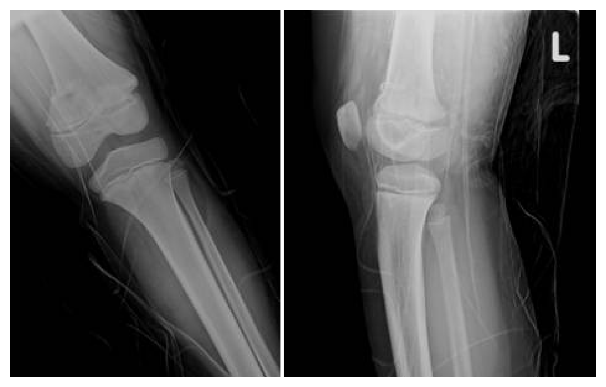
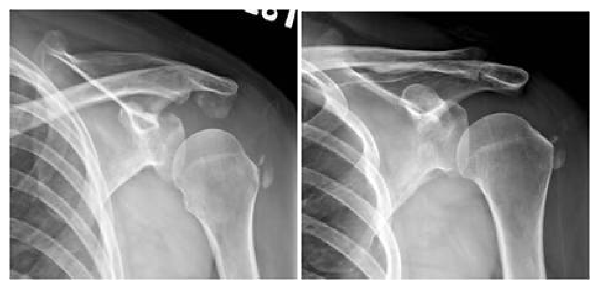
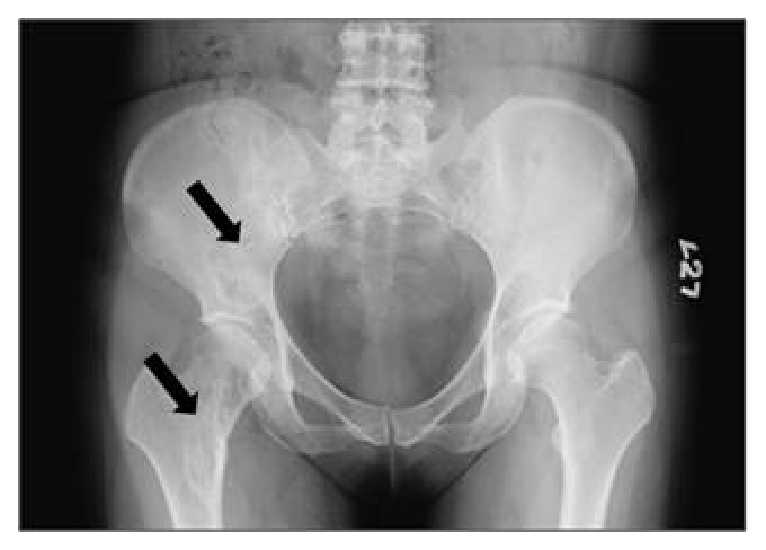
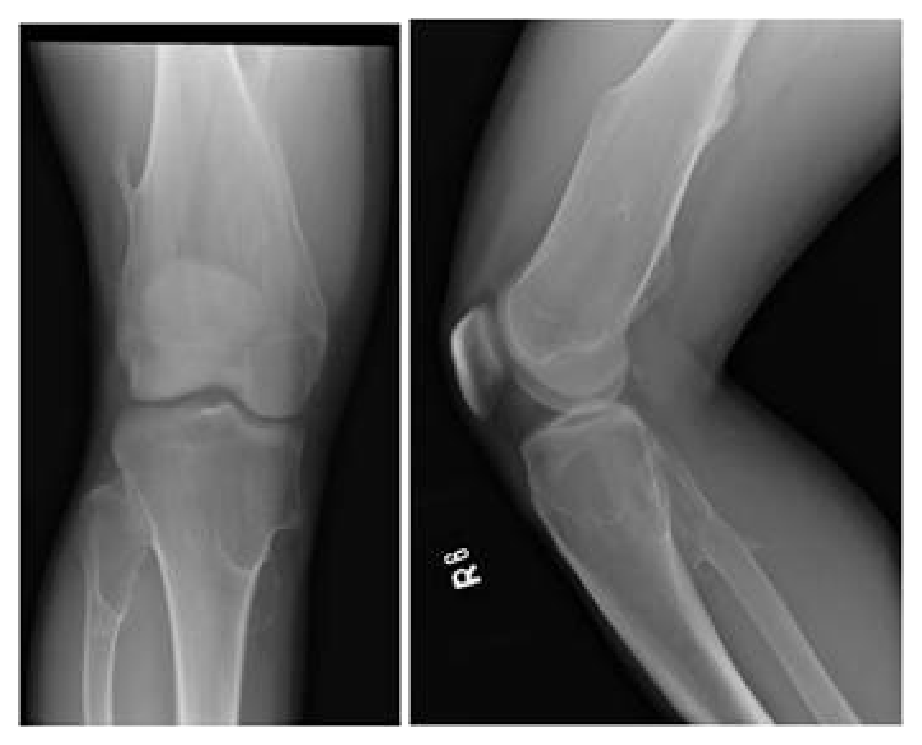

開卷有益 ／
醫師 ／ 醫學（五）（包括外科、骨科、泌尿科等科目及其相關臨床實例與醫學倫理） ／ 105 年第 2 次105 年第 2 次醫師醫學（五）（包括外科、骨科、泌尿科等科目及其相關臨床實例與醫學倫理）試題與答案
這一頁是民國 105 年第 2 次醫師醫學（五）（包括外科、骨科、泌尿科等科目及其相關臨床實例與醫學倫理）的整份歷屆試題，共 80 題，題目與標準答案出自考選部「國家考試試題及測驗式試題答案」開放資料，其中 80 題附有詳解。以下逐題列出題幹、選項與答案；要計時作答或記錄成績，請用線上練習。
考選部原始場次代碼：105100
線上作答這一科 →
全部 80 題
第 1 題
小兒甲狀腺舌骨囊腫（thyroglossal duct cyst），為了減少復發，手術中除了囊腫外，還要切除那個結構的中央部分？
（A） 甲狀軟骨（thyroid cartilage）（B） 環狀軟骨（cricoid cartilage）（C） 舌骨（hyoid bone）（D） 杓狀軟骨（arytenoid cartilage）答案：（C）
詳解與考點 正解：甲狀腺舌骨囊腫（thyroglossal duct cyst）沿胚胎期甲狀腺下降路徑形成，該路徑常與舌骨中央相連。Sistrunk 手術除囊腫與瘻管外，會切除舌骨中央部分以清除殘留管道、降低復發，故選 C。
A：甲狀軟骨不是甲狀舌管殘留路徑需要一併切除的中央結構。
B：環狀軟骨位於喉部較下方，不是 Sistrunk 手術的常規切除結構。
D：杓狀軟骨參與聲門運動，與甲狀舌管囊腫的胚胎行徑無直接關係，也不應為降低復發而切除。
本題考點：甲狀腺舌骨囊腫（thyroglossal duct cyst）源自甲狀舌管殘留；Sistrunk procedure 包含囊腫、管道及舌骨（hyoid bone）中央部分的切除，以降低復發。
第 2 題
下列敘述，何者正確？
（A） 植入物（prosthesis）相關的感染通常發生在肺部（B） 手術後發燒需立即給予抗生素（C） 尿路感染（urinary tract infection）是手術後最常見的非手術感染（nonsurgical infection）（D） 選擇抗生素做經驗性治療（empirical treatment）時，最好是同時使用抗厭氧菌的抗生素答案：（C）
詳解與考點 正解：依傳統外科考題框架，導尿管相關尿路感染（urinary tract infection）被列為手術後最常見的非手術部位感染，故選 C。惟感染分布會隨病人族群、導管使用與感染管制措施而變動，此最高級結論不宜視為所有場域的固定現況。
A：植入物相關感染通常發生在植入物周邊的手術部位或血流播散處，不是通常發生在肺部。
B：術後發燒有多種非感染原因，未釐清感染來源即立即給抗生素可能造成不必要用藥。
D：經驗性抗生素須依感染部位、嚴重度、可能病原及院內抗藥性資料選擇，並非一律加入抗厭氧菌藥物。
本題考點：術後非手術感染（nonsurgical infection）；導尿管相關尿路感染（catheter-associated urinary tract infection）；經驗性抗生素治療（empirical antimicrobial therapy）。
第 3 題
嚴重外傷之病患，術後需要足量營養補充，以維持各項生理功能與組織復原。營養補充是否足夠，可藉由下列各種生化檢定來評估，何者除外？
（A） 白蛋白（albumin）（B） 球蛋白（globulin）（C） 前白蛋白（prealbumin）（D） 轉鐵蛋白（transferrin）答案：（B）
詳解與考點 正解：官方答案為 B，採舊式營養評估分類時，albumin、prealbumin 與 transferrin 曾列為內臟蛋白指標，而 globulin 不屬該類指標，故選 B。惟嚴重外傷的急性期反應會顯著影響前述蛋白，現行不應以其判定營養補充是否足夠。
A：albumin 為負急性期蛋白，主要受發炎、肝臟合成與液體分布影響，不能可靠反映急性期營養攝取。
C：prealbumin 半衰期雖短，但同受急性期反應影響，不宜據以追蹤嚴重外傷病人的短期營養反應。
D：transferrin 亦受鐵狀態與發炎影響，不能單獨判定營養充足度。
本題考點：營養評估（nutritional assessment）；負急性期蛋白（negative acute-phase proteins）；嚴重外傷的發炎反應（acute-phase response）。
第 4 題
嚴重多重外傷病患經積極治療及手術後，如能夠存活超過一星期，最常見之晚期死亡原因為何？
（A） 嚴重頭部外傷（B） 多重器官衰竭（C） 出血性休克（D） 急性腎衰竭答案：（B）
詳解與考點 正解：嚴重多重外傷病人若已度過最初一週，立即致死的出血與頭部傷害相對已被處置；後續持續發炎、感染、器官灌流失衡與併發症可演變為多重器官衰竭（multiple organ failure），是晚期死亡的典型原因，故選 B。
A：嚴重頭部外傷是外傷早期重要死亡原因，但題幹限定已存活超過一星期，較不符合所問的晚期死亡型態。
C：出血性休克多在受傷初期或未控制出血時造成死亡；能經積極治療存活一週後，不是最常見的晚期死亡原因。
D：急性腎衰竭可為重症併發症，但常是多重器官衰竭的一部分，不能取代其作為最常見晚期死亡原因。
本題考點：外傷死亡時序（trauma mortality timing）中，早期常見出血與中樞神經傷害；晚期併發症與多重器官衰竭（multiple organ failure）相關。
第 5 題
有關高齡病人急性闌尾炎（acute appendicitis）之敘述，下列何者錯誤？
（A） 發生急性闌尾炎之機率，較年輕人高（B） 較年輕族群症狀表現較不典型，診斷容易延遲（C） 較年輕族群，穿孔（perforation）機率大，合併症較多（D） 與盲腸憩室炎（cecal diverticulitis）鑑別診斷不易答案：（A）
詳解與考點 正解：高齡者雖然罹患急性闌尾炎時較易出現非典型表現、診斷延遲與穿孔，但急性闌尾炎的整體發生率並不比年輕族群高；因此 A 的敘述錯誤。關鍵是分開「發生率」與「一旦發生後的診斷困難及預後」兩件事。
B：高齡者的腹痛、發燒與白血球反應可能較不典型，也常合併其他疾病，使診斷較易延遲，敘述正確，故非答案。
C：因表現不典型與延遲診斷，高齡者較容易在穿孔後才被發現，併發症也較多，敘述正確。
D：右下腹痛在高齡者須鑑別盲腸憩室炎（cecal diverticulitis）等疾病，臨床與影像判讀可能不易，敘述正確。
本題考點：高齡急性闌尾炎（acute appendicitis in older adults）常有非典型表現與較高穿孔風險；流行病學的發生率（incidence）須與個案的穿孔率及診斷延遲分開判讀。
第 6 題
有關全身性發炎反應症候群 SIRS（systemic inflammatory response syndrome）的定義，下列何者錯誤？
（A） 心跳每分鐘大於90下（B） 收縮壓小於90 mmHg（C） 在正常呼吸下呼吸速率每分鐘大於20下或是血液中二氧化碳分壓（PaCO2）小於32 mmHg（D） 白血球大於12,000 cells/mm3或小於4000 cells/mm3或在周邊血液抹片有大於10% immature（Band）cells答案：（B）
詳解與考點 正解：傳統全身性發炎反應症候群（systemic inflammatory response syndrome, SIRS）定義包含體溫異常、心跳每分鐘大於90下、呼吸速率每分鐘大於20下或 PaCO2 小於32 mmHg，以及白血球異常；收縮壓小於90 mmHg並非其診斷條件，而是可能提示休克或嚴重循環異常，故 B 錯誤。
A：心跳每分鐘大於90下是傳統 SIRS 條件之一，敘述正確，故非答案。
C：呼吸速率每分鐘大於20下或 PaCO2 小於32 mmHg 是呼吸相關條件，敘述正確。
D：白血球大於12000 cells/mm3、小於4000 cells/mm3，或 band forms 大於10% 是白血球相關條件，敘述正確。
本題考點：全身性發炎反應症候群（SIRS）以體溫、心率、呼吸及白血球四類反應判定；低血壓（hypotension）雖是重症警訊，但不屬於傳統 SIRS 定義本身。
第 7 題
42歲男性病人有低血壓並懷疑有敗血症，接受中央靜脈導管（central venous catheter）插入後應如何給予輸液？
（A） 輸注晶體輸液（crystalloid fluid）100毫升／小時（B） 輸注晶體輸液（crystalloid fluid）200毫升／小時（C） 輸注晶體輸液（crystalloid fluid）500毫升／15分鐘，如果仍為低血壓而且中央靜脈壓力（CVP）＜8〜12 mmHg時，再給予500毫升的輸液（D） 輸注晶體輸液（crystalloid fluid）500毫升／15分鐘，如果仍為低血壓而且中央靜脈壓力（CVP）＞15 mmHg 時，再給予500毫升的輸液答案：（C）
詳解與考點 正解：題幹是低血壓且懷疑敗血症，需迅速以晶體液做容量復甦並評估反應。選項 C 先給500 ml/15分鐘，若仍低血壓且 CVP 尚未達題目所列8～12 mmHg，再給500 ml，符合本題使用的分次快速輸液與容量目標邏輯，故選 C。
A、B：100 ml／小時與200 ml／小時屬緩慢維持速度，對低血壓的初始復甦不足，不能迅速判定容量反應。
D：若 CVP 已大於15 mmHg，提示可能已有較高充盈壓；未重新評估即再快速給500 ml，可能增加液體負荷，不合題目判準。
本題考點：敗血症初始輸液復甦（sepsis fluid resuscitation）須以快速晶體液 bolus 與反覆血流動力評估為核心；本題採用中央靜脈壓（central venous pressure, CVP）目標的較舊框架，現行實務不宜只靠單一 CVP 值決定補液，因此此數值門檻具時效性。
第 8 題
導致手術部位感染（surgical site infections）的危險因子，下列何者錯誤？
（A） 手術部位有血腫（B） 低氧血症（C） 不抽菸的年輕病人（D） 營養不良答案：（C）
詳解與考點 正解：手術部位感染（surgical site infection, SSI）的危險因子包括傷口血腫、組織低氧與營養不良；不抽菸的年輕病人反而缺少吸菸與高齡等常見危險因子，因此 C 是錯誤敘述。
A：血腫提供細菌生長介質且妨礙傷口組織灌流，會增加感染風險，敘述正確，故非答案。
B：低氧血症會降低組織氧合與宿主防禦能力，增加傷口感染風險，敘述正確。
D：營養不良會影響免疫反應、膠原蛋白生成與傷口癒合，屬感染危險因子，敘述正確。
本題考點：手術部位感染（surgical site infection, SSI）與傷口血腫（hematoma）、低氧（hypoxia）及營養不良（malnutrition）有關；可調整危險因子如吸菸與營養狀態是術前優化重點。
第 9 題
下列關於癌症和它的腫瘤標記（tumor markers）之配對，何者錯誤？
（A） carbohydrate antigen 19-9（CA19-9）and ovarian cancer（B） alpha fetoprotein（AFP）and hepatocellular carcinoma（C） carcinoembryonic antigen（CEA）and colon cancer（D） human chorionic gonadotropin（HCG）and choriocarcinoma答案：（A）
詳解與考點 正解：題目問錯誤配對。CA19-9 常與胰膽道惡性腫瘤相關，卵巢癌較常使用 CA-125 作為追蹤輔助標記，因此「CA19-9 and ovarian cancer」不是典型配對，故選 A。腫瘤標記多用於輔助診斷、療效或復發追蹤，不能單獨作篩檢或確診。
B：AFP 與肝細胞癌（hepatocellular carcinoma）相關，是經典配對，敘述正確，故非答案。
C：CEA 常用於大腸癌（colon cancer）的治療後追蹤與復發監測，配對正確；看似可作診斷依據，但其特異性不足，不能單獨診斷。
D：HCG 與絨毛膜癌（choriocarcinoma）相關，可用於疾病追蹤，配對正確。
本題考點：腫瘤標記（tumor markers）中，AFP 對應肝細胞癌（hepatocellular carcinoma）、CEA 對應大腸癌（colon cancer）追蹤、HCG 對應絨毛膜癌（choriocarcinoma）；CA19-9 主要與胰膽道腫瘤相關，卵巢癌常見輔助標記為 CA-125。
第 10 題
下列有關腕隧道症候群（carpal tunnel syndrome）的描述，何者錯誤？
（A） 由腕隧道經過的神經為橈神經（radial nerve）（B） Tinel's sign positive（C） 病人若出現魚際肌（thenar muscle）萎縮或無力代表嚴重的運動神經壓迫（D） 可透過神經傳導速度（nerve conduction velocity）檢查來確定診斷答案：（A）
詳解與考點 正解：腕隧道內受壓的主要神經是正中神經（median nerve），不是橈神經（radial nerve），故 A 錯誤。正中神經在腕隧道受壓會造成拇指、食指、中指及無名指橈側感覺異常，嚴重時影響魚際肌功能。
B：在腕隧道處叩擊誘發正中神經分布區麻刺感的 Tinel's sign 可為陽性，敘述正確，故非答案。
C：魚際肌萎縮或無力代表正中神經運動分支長期或嚴重受壓，是較嚴重的神經壓迫表現，敘述正確。
D：神經傳導速度（nerve conduction velocity）檢查可協助確認正中神經跨腕部傳導遲滯並評估嚴重度，敘述正確。
本題考點：腕隧道症候群（carpal tunnel syndrome）是正中神經（median nerve）在腕隧道受壓；Tinel's sign 與神經傳導檢查（nerve conduction study）可協助診斷；魚際肌（thenar muscle）萎縮提示較嚴重運動神經受損。
第 11 題
下列有關神經性休克（neurogenic shock ）之敘述，何者錯誤？
（A） 低血壓（B） 心跳慢（C） 周邊血管灌流變差（D） 可使用α agonist治療答案：（C）
詳解與考點 正解：神經性休克因交感神經張力喪失而血管擴張，典型上缺乏低血容量性休克式的末梢血管收縮、皮膚冰冷與灌流表徵；（C）因此為錯誤，故選 C。惟低血壓仍可使有效循環量與組織灌流不足，不能把皮膚溫暖等同全身灌流正常。
A：交感神經血管收縮作用消失使全身血管阻力下降，可造成低血壓。
B：交感神經心臟加速作用消失、迷走神經作用相對占優勢，常見心跳慢。
D：α agonist 可增加血管張力及周邊血管阻力，可用於矯正血管擴張性低血壓。
本題考點：神經性休克（neurogenic shock）；分布性休克（distributive shock）；末梢血管收縮與組織灌流的區分。
第 12 題
下列有關脊髓的感覺神經分布之配對，何者正確？
（A） T4－腋下（B） T6－乳頭附近（C） T10－肚臍周圍（D） L5－腳踝外側答案：（C）
詳解與考點 正解：本題以皮節（dermatome）的標誌性體表位置配對；肚臍周圍是 T10 的經典定位，故（C）正確。
A：腋下附近較對應 T2，而非 T4；T4 的重要標誌是乳頭附近，故配對錯誤。
B：乳頭附近是 T4，不是 T6；T6 較在劍突附近，兩者相差數個胸椎皮節。
D：外踝附近較對應 S1，L5 的感覺常分布在足背與大拇趾區域；外踝容易讓人聯想到下肢神經根，卻不是 L5 的典型定位。
本題考點：皮節（dermatome）是單一脊神經根支配的皮膚感覺區；常用定位包括 T4 乳頭、T6 劍突、T10 肚臍與 S1 外踝。
第 13 題
下列何者是最常見之脊椎硬脊膜上轉移（spinal epidural metastasis）初期症狀？
（A） 神經根病變（radiculopathy）（B） 局部疼痛（local pain）（C） 尿液滯留（urinary retension）（D） 下肢麻木（numbness of lower limbs）答案：（B）
詳解與考點 正解：脊椎硬脊膜上轉移最早且最常見的症狀是局部背痛，常因椎體病灶、骨膜受侵犯或夜間加劇而出現；神經功能缺損通常較晚，故選 B。
A：神經根受壓可造成放射性疼痛或神經根病變，但通常是在局部疼痛後隨病灶延伸才出現，不是最常見初期症狀。
C：尿液滯留提示脊髓壓迫已影響自主神經功能，屬較晚期且須緊急處理的警訊，非初期表現。
D：下肢麻木可見於脊髓或神經根受壓；它看似合理，但代表神經結構已受影響，出現時序通常晚於局部疼痛。
本題考點：脊椎硬脊膜上轉移（spinal epidural metastasis）常先以局部背痛表現；進展後可出現神經根症狀、脊髓壓迫、感覺運動缺損與膀胱腸道功能障礙。
第 14 題
下列腦膜瘤（meningiomas）中，何者不由內頸動脈（internal carotid artery）供應血流 ？
（A） 嗅溝腦膜瘤（olfactory groove meningioma）（B） 蝶骨翼腦膜瘤（sphenoid wing meningioma）（C） 側腦室腦膜瘤（lateral ventricle meningioma）（D） 顱凸處腦膜瘤（cranial convexity meningioma）答案：（D）
詳解與考點 正解：本題考腦膜瘤的主要供血來源。顱凸處腦膜瘤多由外頸動脈系統的中腦膜動脈供血，不以內頸動脈為主要來源，故選 D。
A：嗅溝腦膜瘤位於前顱窩底，常可獲得眼動脈等內頸動脈分支供血，故不是本題答案。
B：蝶骨翼腦膜瘤鄰近顱底與蝶骨嵴，可有內頸動脈系統分支供血，敘述不符題意。
C：側腦室腦膜瘤可由脈絡叢相關的前脈絡膜動脈或後脈絡膜動脈供血；前脈絡膜動脈來自內頸動脈，故非本題所問。
本題考點：腦膜瘤血管供應（meningioma vascular supply）須依腫瘤位置判讀；顱凸處病灶常由中腦膜動脈等外頸動脈分支供應，顱底或腦室內病灶則可有內頸動脈系統供血。
第 15 題
根據Hunt and Hess SAH classification，一個蜘蛛膜下腔出血（SAH）病人，臨床上只有輕微頭痛及輕微頸部僵硬，且無其他神經學檢查異常（focal neurological deficit），其grade應為下列何者？
（A） 1（B） 2（C） 3（D） 4答案：（A）
詳解與考點 正解：Hunt and Hess 分級中，僅有輕微頭痛與輕微頸部僵硬、沒有神經學缺損，符合 grade I，故選 A。
B：grade II 為中度至重度頭痛與頸部僵硬，仍可無神經缺損；本題明示症狀僅輕微，程度不足。
C：grade III 會出現嗜睡、意識混亂或輕度局部神經缺損，本題沒有這些表現。
D：grade IV 有昏睡、較嚴重的局部神經缺損或早期去腦僵直等表現，顯著重於本題情況。
本題考點：Hunt and Hess classification 用於蜘蛛膜下腔出血（subarachnoid hemorrhage, SAH）的臨床嚴重度分級；grade I 是輕微頭痛、輕微頸僵且無神經缺損。
第 16 題
下列有關腦部偽腫瘤（pseudotumor cerebri）的敘述，何者錯誤？
（A） 常伴隨腦室變大（B） 腦壓增高，作腰椎穿刺壓力往往超過200 mmH2O（C） 會有視乳突水腫（papilledema）（D） 內科治療以類固醇及利尿劑為主答案：（A）
詳解與考點 正解：官方答案為 A。特發性顱內高壓（idiopathic intracranial hypertension）定義上沒有腦室擴大或占位性病灶，故（A）錯誤。惟（D）將類固醇列為主要內科治療亦屬舊式表述；現行核心為體重管理與 acetazolamide，故本題單一性有爭議。
B：腰椎穿刺可見開放壓升高；舊題常用超過 200 mmH2O 的描述，現行成人診斷門檻通常為 >250 mmH2O，須依診斷準則判讀。
C：顱內壓升高可造成視乳突水腫（papilledema），並可能危及視力。
D：利尿相關藥物可作內科治療，但類固醇不是現行常規主要治療；此選項反映治療時效性爭議。
本題考點：特發性顱內高壓（idiopathic intracranial hypertension）；開放壓（opening pressure）；acetazolamide 與視功能監測。
第 17 題
17歲的陳大雄左手腕背面摸到一顆突起腫瘤，媽媽帶他到整形外科門診求診時，醫師會跟他說這顆腫瘤最常見是什麼？
（A） 腱鞘囊腫（ganglion cyst）（B） 巨大細胞瘤（giant cell tumor）（C） 脂肪瘤（lipoma）（D） 內生軟骨瘤（enchondroma）答案：（A）
詳解與考點 正解：青少年在手腕背側摸到突起腫塊，最典型且最常見的是腱鞘囊腫；它多起自關節囊或腱鞘、常見於手腕背側，故選 A。
B：巨大細胞瘤可發生於腱鞘，但較常是手指的實質性腫塊，並非手腕背側最常見的腫瘤。
C：脂肪瘤雖常見，通常為柔軟、可移動的皮下腫塊，位置與年齡線索不如腱鞘囊腫相符。
D：內生軟骨瘤是骨內的良性軟骨腫瘤，常在手部小骨造成膨脹或病理性骨折，非典型的手腕背側表淺突起。
本題考點：腱鞘囊腫（ganglion cyst）是手腕最常見的軟組織腫塊；典型位置為手腕背側，須和腱鞘巨大細胞瘤、脂肪瘤及骨內病灶區分。
第 18 題
神經的損傷依據Sunderland的分類可以分為幾類？
（A） 三（B） 四（C） 五（D） 六本題送分，無標準答案
詳解與考點 本題官方公告送分。
第 19 題
大部份血管瘤（hemangioma）在多少歲開始退化？
（A） 1個月（B） 3～6個月（C） 6～9個月（D） 12～18個月答案：（D）
詳解與考點 正解：官方答案為 D。本題採用的傳統分期將嬰兒血管瘤的自然退化開始時點置於約 12～18 個月，故選 D；惟現代資料常將退化開始描述為約 6～12 個月，且會因病灶深度與個體而異，選項（C）與（D）的區間有重疊爭議。
A：出生後 1 個月仍多在增生早期，病灶常持續變大，不是通常開始退化的時點。
B：3～6 個月是嬰兒血管瘤快速增生的常見期間，與退化期相反。
C：6～9 個月可能接近增生高峰、增長趨緩或部分病灶的退化起始；以較寬鬆的現代時序解讀時，不能一概排除。
本題考點：嬰兒血管瘤（infantile hemangioma）的自然史包括早期增生期與後續退化期；退化起始時點有病灶與分期定義差異。
第 20 題
下列關於燒燙傷深度（burn depths）的判斷，下列敘述何者錯誤？
（A） 國中生到海水浴場玩，被太陽曬傷造成背部發紅及疼痛。發紅的皮膚受到壓迫會變白（blanch to the touch），壓力釋放後又變紅。這是一度燒燙傷（B） 老人家燒熱水洗澡。水太熱又忘了加冷水。一腳踏進浴缸的熱水裡被燙傷。患處皮膚蒼白、起水泡、受到壓迫不變色（donot blanch to touch），但是碰觸尖細物品仍會疼痛（painful to pinprick）。這是淺二度燒燙傷（C） 機車騎士出車禍。小腿遠端內側被灼熱的排氣管壓住造成灼傷。患處皮膚形成不痛的皮革狀焦痂（leathery eschar），這是三度燒燙傷（D） 情侶分手，女方極度沮喪而燒炭自殺。女方昏迷後被發現，送醫成功挽回生命。但患者在燒炭昏迷的過程中，右腳太靠近炭火，連肌肉都被烤焦了。這是四度燒燙傷答案：（B）
詳解與考點 正解：燒燙傷深度要由顏色、壓白反應與針刺痛覺共同判斷；（B）的蒼白、不壓白但仍針刺痛，較符合深二度燒燙傷（deep partial-thickness burn），不是淺二度，故選 B。
A：一度燒燙傷只影響表皮，會紅、痛且壓迫可暫時變白，符合題述，敘述正確。
C：三度燒燙傷為全層皮膚損傷，常有無痛的皮革狀焦痂，符合題述；無痛是因皮膚感覺神經末梢已受破壞。
D：四度燒燙傷超出皮膚與皮下組織，可延及肌肉甚至骨骼；題述連肌肉烤焦，符合四度傷定義。
本題考點：燒燙傷深度（burn depth）以壓白反應與痛覺鑑別；淺二度通常紅、濕潤、會壓白且劇痛，深二度則較蒼白、壓白差但可仍有針刺痛，三度常為無痛焦痂。
第 21 題
關於褥瘡的分級，下列敘述何者錯誤？
（A） 第一級，皮膚完整但出現下壓不會反白的發紅區（B） 第二級，部分皮層缺損，呈現表淺性潰瘍，臨床上可看到擦傷、水泡、淺的火山口狀傷口（C） 第三級，部分皮層缺損，可看到組織被破壞與壞死（D） 第四級，全皮層缺損，可看到組織被嚴重破壞與壞死，壞死深及肌肉層、骨骼、支持性結構答案：（C）
詳解與考點 正解：壓力性損傷第三期已是全層皮膚缺損，而非部分皮層缺損；（C）把第三級寫成部分皮層缺損，故錯誤的是 C。
A：第一期是完整皮膚上的持續性非壓白紅斑，敘述正確，非本題答案。
B：第二期是部分皮層缺損，傷口床可呈淺潰瘍、水泡或擦傷樣外觀，敘述正確。
D：第四期為全層皮膚與組織缺損，可暴露或直接觸及深部筋膜、肌肉、肌腱、軟骨或骨，符合題述。
本題考點：壓力性損傷分期（pressure injury staging）中，第二期是部分皮層缺損；第三期為全層皮膚缺損；第四期進一步累及深部組織。
第 22 題
與顯微組織皮瓣（microvascular free flaps）比較之下，局部皮瓣（local flaps）有下列限制，何者錯誤？
（A） 局部皮瓣（local flaps）的覆蓋範圍是受限制的（B） 局部皮瓣（local flaps）的遠端之血液循環可能不好（C） 在外傷的情況下局部皮瓣（local flaps）可能受傷，不一定可靠（D） 老人的局部皮瓣（local flaps）與年輕病患的局部皮瓣一樣可靠答案：（D）
詳解與考點 正解：題目問局部皮瓣的限制何者錯誤。局部皮瓣是否可靠取決於血管狀態、組織品質與傷口環境；高齡者常有血管與組織條件下降，不能一概視為與年輕人同樣可靠，故選 D。
A：局部皮瓣必須從鄰近組織移轉，其可達距離與可覆蓋面積確實受限制，敘述正確。
B：皮瓣遠端可能因灌流壓較低或張力過大而缺血，是局部皮瓣設計的重要限制，敘述正確。
C：創傷可能破壞局部供血血管與周圍軟組織，因此受傷區附近的局部皮瓣未必可靠，敘述正確。
本題考點：局部皮瓣（local flap）受限於可移轉距離、遠端血流及受區血管完整性；皮瓣規劃必須評估患者年齡、血管疾病、外傷範圍與組織品質。
第 23 題
下列關於心臟瓣膜疾病，何者正確？①暈厥（syncope）為重度主動脈瓣狹窄之手術適應症之一 ②僧帽瓣修補術可用於擴張性心肌症（dilated cardiomyopathy）患者的手術治療 ③心臟移植手術可用於心臟瓣膜疾病患的手術治療 ④僧帽瓣修補的手術死亡率比僧帽瓣置換術的手術死亡率高
（A） ①②③（B） 僅①③（C） ②④（D） 僅④答案：（A）
詳解與考點 正解：本題逐項判讀心臟瓣膜疾病的手術觀念。①有症狀的重度主動脈瓣狹窄，暈厥是重要症狀與介入指徵；②擴張性心肌症合併功能性僧帽瓣逆流可在選擇性病人考慮僧帽瓣修補；③末期瓣膜性心臟病若無法以修補或置換挽救，心臟移植可作治療選項。④則錯在手術死亡率的比較，僧帽瓣修補通常不高於置換術。因此正確組合是①②③，故選 A。
B：此組合漏掉（②）擴張性心肌症合併功能性僧帽瓣逆流的選擇性修補可能，故不完整。
C：此組合納入（④），但僧帽瓣修補能保留原生瓣膜與左心室結構，通常不是死亡率較高的作法，故錯。
D：此組合只保留（④），而（④）本身即錯，也漏掉三項正確敘述。
本題考點：重度主動脈瓣狹窄（severe aortic stenosis）出現暈厥等症狀須評估瓣膜介入；僧帽瓣修補（mitral valve repair）在合適病人可優於置換；心臟移植（heart transplantation）可用於無其他可行治療的末期心臟病。
第 24 題
關於冠狀動脈繞道手術，下列何者之長期暢通率（long-term patency rate）最差？
（A） 右內胸動脈（right internal thoracic artery）（B） 大隱靜脈（greater saphenous vein）（C） 右網膜動脈 (right gastroepiploic artery)（D） 左橈動脈（left radial artery）答案：（B）
詳解與考點 正解：冠狀動脈繞道手術的長期通暢率與導管材質密切相關；大隱靜脈移植物較易發生內膜增生與動脈粥樣硬化，長期通暢率通常低於內胸動脈或橈動脈等動脈移植物，故選 B。
A：內胸動脈是長期效果優良的動脈導管，通暢率通常優於大隱靜脈，非最差者。
C：右網膜動脈的通暢率受競爭性血流與目標血管選擇影響，資料會隨追蹤期與手術條件而異；本題採傳統長期導管退化觀念，以大隱靜脈為答案，不能斷言右網膜動脈一概優於大隱靜脈。
D：橈動脈是常用動脈導管，適當選擇目標血管後的長期通暢性一般優於靜脈導管；它看似較細小，卻不是本題最差的選項。
本題考點：冠狀動脈繞道（coronary artery bypass grafting, CABG）的導管選擇中，動脈移植物通常有較佳長期通暢性；大隱靜脈移植物（saphenous vein graft）較易退化與阻塞。
第 25 題
下列有關開心手術術中的心肌保護，何者錯誤？
（A） 心臟一旦停止跳動，需留滯大量血液在腔室內，使含氧血可經由心內膜進入心肌細胞，達到心肌保護的效果（B） 心肌保護液為高鉀離子之溶液，可降低心肌細胞的代謝（C） 藉由體外循環的全身血液降溫以及心臟冰浴，可達到心肌保護的效果（D） 心肌保護液可以藉由順行性或逆行性路徑灌注心肌細胞，兩者皆可達到心肌保護的效果答案：（A）
詳解與考點 正解：（A）心臟停止後在心腔內留滯大量血液，不會有效經心內膜供氧給心肌，反而會使心臟膨脹並增加心肌耗氧，因此錯誤，故選 A。
B：高鉀心肌保護液可使心肌停搏，配合低溫等措施降低心肌代謝需求，敘述正確。
C：體外循環降溫與心臟表面冰浴可降低代謝率，是心肌保護的輔助措施，敘述正確。
D：心肌保護液可採順行性冠狀動脈灌注或逆行性冠狀靜脈竇灌注，依手術與冠狀血流情況選擇，兩者都可用於心肌保護。
本題考點：心肌保護（myocardial protection）的原則是降低代謝需求並以心肌保護液供應保護；高鉀停搏（cardioplegic arrest）、低溫與避免心室膨脹是核心概念。
第 26 題
有關大動脈轉位伴隨正常心室中隔（transposition of great arteries with intact ventricular septum）之敘述，下列何者正確？①prostaglandin E1靜脈輸注可增加肺動脈血流量 ②心房中隔氣球打洞術（balloon atrial septostomy）無法改善動脈血氧飽和度（oxygen saturation） ③大動脈移轉手術（arterial switch operation）之最佳時機為出生後一至二星期內 ④手術前確實瞭解冠狀動脈之分布情況是大動脈移轉手術的成敗關鍵
（A） ①②（B） ①③（C） ②④（D） 僅④答案：（B）
詳解與考點 正解：完全大動脈轉位合併完整心室中隔時，前列腺素 E1 可維持動脈導管開放、增加肺血流並促進混合；大動脈移轉手術須在出生後早期完成，因此①、③正確，官方答案為 B。惟（④）所稱術前掌握冠狀動脈分布在臨床上也是動脈移轉手術規劃的重要事項，題目將其排除於正確組合的判準不夠明確。
A：此組合包含（②），但心房中隔氣球打洞術可增加心房層級血液混合，能改善動脈血氧飽和度，故（②）錯誤。
C：此組合同時包含錯誤的（②），所以不成立；（④）雖是重要術前評估，無法補正（②）的錯誤。
D：此組合漏掉正確的（①）與（③），且僅以（④）作答無法符合題目組合判讀。
本題考點：完全大動脈轉位（transposition of the great arteries, TGA）需要血液混合維持氧合；前列腺素 E1（prostaglandin E1）維持動脈導管開放，心房中隔氣球打洞術（balloon atrial septostomy）可增加混合，動脈移轉手術（arterial switch operation）在新生兒早期施行。
第 27 題
一位20歲男性因持續性胸痛2個月求診，胸部X-ray及電腦斷層檢查顯示：前縱隔腔腫瘤併主動脈侵犯，alpha-fetoprotein和beta-HCG為正常，下列何者錯誤？
（A） 應先切除腫瘤，之後要以化學治療為輔助性治療（adjuvant treatment）（B） 治療前應先做切片檢查（C） 應檢查生殖腺是否有病變（D） 這種腫瘤對放射線治療可能有反應答案：（A）
詳解與考點 正解：（A）主張一律先切除再輔助化療，但忽略主動脈侵犯及不同病理的治療差異；前縱隔腫瘤須先取得組織診斷與完成分期，再依病理決定化學治療、放射治療或手術策略，因此錯誤的是 A。
B：治療前切片可區分胸腺腫、淋巴瘤、生殖細胞腫瘤等不同病理，直接改變治療順序，敘述正確。
C：前縱隔腫瘤需評估是否有生殖腺原發病灶或相關腫瘤，檢查生殖腺屬合理鑑別與分期步驟。
D：部分前縱隔腫瘤對放射線治療有反應，病理診斷後可納入治療考量，敘述正確。
本題考點：前縱隔腫瘤（anterior mediastinal tumor）的處置取決於病理診斷與可切除性；侵犯大血管時尤其不能假定可先手術，組織診斷與多專科規劃優先。
第 28 題
有關adenoid cystic carcinoma of lung之敘述，下列何者正確？①大部分發生於肺周邊組織 ②大部分腫瘤的治療以局部氣管手術切除即可 ③大部分腫瘤都是以局部生長緩慢的氣管支氣管病灶為表現 ④腫瘤絕不會有遠端轉移的現象
（A） ①②（B） ②③④（C） ①③④（D） 僅②③答案：（D）
詳解與考點 正解：肺部腺樣囊性癌多為中央氣管或支氣管的緩慢生長病灶，局部氣管手術切除是主要治療；①錯、②與③對、④「絕不」遠端轉移錯，因此正確組合為②③，故選 D。
A：此組合納入（①），但腺樣囊性癌主要起自氣管支氣管腺體，並非大多發生於肺周邊組織，故錯。
B：此組合雖含（②）與（③），卻納入（④）；腺樣囊性癌可在晚期發生遠端轉移，絕對化用語錯誤。
C：此組合同時包含（①）與（④）兩項錯誤敘述，不能成立。
本題考點：肺部腺樣囊性癌（adenoid cystic carcinoma of lung）多源自中央氣管支氣管腺體、局部生長較慢；可採局部切除，但仍可能局部復發或遠端轉移。
第 29 題
關於食道弛緩不能（esophageal achalasia）的外科手術，下列何者正確？①可經由開胸與開腹手術施行 ②大部分必須施行食道切除與重建手術才能解決吞嚥困難的問題 ③下食道括約肌的肌肉切開術是最常使用的方法 ④胃底折疊手術（fundoplication） 有助於減少術後胃液逆流的產生
（A） ①②③（B） ①②④（C） ②③④（D） ①③④答案：（D）
詳解與考點 正解：食道弛緩不能的標準外科治療為下食道括約肌肌肉切開術，可經胸或經腹途徑施行，並常加做胃底折疊以減少逆流；①、③、④正確，故選 D。
A：此組合納入（②），但大多數病人可藉肌肉切開解除功能性阻塞，不需要食道切除與重建，故錯。
B：此組合也納入錯誤的（②），不能成立；食道切除僅保留給少數嚴重擴張、末期或其他治療失敗的個案。
C：此組合同樣將（②）列為正確，與一般治療原則不符。
本題考點：食道弛緩不能（esophageal achalasia）是下食道括約肌鬆弛障礙；Heller 肌肉切開術（Heller myotomy）可經胸或經腹施行，合併胃底折疊術（fundoplication）可降低術後胃食道逆流。
第 30 題
有關pectus excavatum（funnel chest）的手術矯正時機，下列何者最正確？
（A） 剛出生時（B） 2～8歲（C） 成年之後（D） 12～18歲本題送分，無標準答案
詳解與考點 本題官方公告送分。
第 31 題
急性膽管炎指的是膽道系統細菌性感染，臨床症狀從輕微自癒到危及生命都有可能，何者非Charcot’s triad？
（A） 發燒（fever）（B） 黃疸（jaundice）（C） 腹痛（abdominal pain）（D） 意識譫妄（delirium）答案：（D）
詳解與考點 正解：急性膽管炎的 Charcot’s triad。其三項表現為發燒、黃疸與右上腹痛，分別反映感染、膽道阻塞與膽道發炎；意識狀態改變不是此三徵，故選 D。若膽管炎惡化合併低血壓與意識改變，才是較嚴重的 Reynolds’ pentad，容易與本題混淆。
A：發燒（fever）是膽道細菌感染造成的全身性發炎表現，為 Charcot’s triad 的組成之一，故不是答案。
B：黃疸（jaundice）反映膽道阻塞造成膽紅素排泄受阻，是 Charcot’s triad 的組成之一，故不是答案。
C：腹痛（abdominal pain），臨床上常位於右上腹，是膽管炎的典型局部症狀，為 Charcot’s triad 的組成之一，故不是答案。
本題考點：急性膽管炎（acute cholangitis）的 Charcot’s triad 為發燒、黃疸與右上腹痛；Reynolds’ pentad 則在此基礎上加上低血壓與意識狀態改變，提示重症感染。
第 32 題
下列有關Mallory-Weiss tears之敘述，何者錯誤？
（A） 常常需要外科手術止血（B） 可以用endoscope確診（C） 病人大部分為男性（D） 典型的位置位於胃小彎（lesser curvature）靠近食道與胃交界處（esophagogastric junction）答案：（A）
詳解與考點 正解：Mallory-Weiss tear 多為嘔吐或乾嘔後在食道胃交界產生的黏膜裂傷。出血多可自行停止，必要時以內視鏡止血；外科手術僅是極少數無法控制出血的情況，稱「常常需要」手術不正確，故選 A。
B：上消化道內視鏡（endoscopy）可直接看見食道胃交界附近的線性黏膜裂傷，也是確認診斷與必要時止血的工具，敘述正確。
C：此病較常見於男性，常與大量飲酒後反覆嘔吐等情境相關，敘述正確。
D：裂傷典型位於食道胃交界附近的胃賁門側，常沿胃小彎方向延伸；此解剖位置符合 Mallory-Weiss tear，敘述正確。
本題考點：Mallory-Weiss tear 是劇烈嘔吐後造成的食道胃交界黏膜裂傷；診斷與止血以內視鏡（endoscopy）為主，多數可自行緩解，手術只留給少數持續出血者。
第 33 題
有關於消化性潰瘍（peptic ulcer) 的分泌之敘述，何者錯誤？
（A） 致病原因（pathogenesis) 包括幽門螺旋桿菌感染（Helicobacter pylori infection），非類固醇性抗發炎藥（nonsteroidal anti-inflammatory drugs，NSAID）及胃酸（gastric acid）（B） 90%的十二指腸潰瘍（duodenal ulcer）及75%的胃潰瘍（gastric ulcer）是和幽門螺旋桿菌感染（Helicobacter pyloriinfection）有關（C） 胃潰瘍的病人較常見的分泌異常（secretory abnormalities）有重碳酸鹽分泌減少（decreased bicarbonate secretion），夜間胃酸分泌增加 （increased nocturnal acid secretion）及日間胃酸分泌增加（increased daytime acid secretion）（D） 胃酸過度分泌（gastric acid hypersecretion）在type II及type III的胃潰瘍病人比type I及type IV的胃潰瘍病人較常見答案：（C）
詳解與考點 正解：胃潰瘍的分泌異常並非一律胃酸過多。多數一般胃潰瘍，尤其 type I，胃酸分泌常正常或偏低，病理核心較偏向黏膜防禦受損；把日間與夜間胃酸分泌增加都列為胃潰瘍常見異常，過度概括，故選 C。
A：幽門螺旋桿菌（Helicobacter pylori）、非類固醇抗發炎藥（NSAID）與胃酸皆參與消化性潰瘍的形成；前二者削弱防禦，胃酸與胃蛋白酶共同造成黏膜損傷，敘述正確。
B：幽門螺旋桿菌感染與十二指腸潰瘍及相當部分胃潰瘍高度相關；題示比例為傳統教科書的概略描述，方向正確。
D：type II、type III 胃潰瘍與十二指腸潰瘍或幽門前潰瘍相關，較可能呈現胃酸過度分泌；相較 type I、type IV 的胃酸分泌較低或正常，敘述正確。
本題考點：消化性潰瘍（peptic ulcer disease）的病因包含 H. pylori、NSAID 與酸性環境；胃潰瘍的主要問題常是黏膜防禦失衡，須與胃酸較常增高的十二指腸潰瘍及特定胃潰瘍型態區分。
第 34 題
急性胰臟炎局部合併症中，下列何者最不常見？
（A） pancreatic phlegmon（B） pancreatic abscess（C） pancreatic pseudocyst（D） renal artery thrombosis答案：（D）
詳解與考點 正解：「急性胰臟炎局部合併症」。局部併發症應發生在胰臟及其周邊組織，例如發炎性腫塊、感染性膿瘍或液體積聚後的假性囊腫；腎動脈血栓不是典型胰臟炎局部合併症，故選 D。
A：pancreatic phlegmon 指胰臟及周邊的發炎性腫塊，可見於急性胰臟炎的局部發炎過程，故不是答案。
B：pancreatic abscess 是胰臟或胰周感染性積膿，可作為胰臟炎後期的局部感染併發症，故不是答案。
C：pancreatic pseudocyst 是胰液被纖維組織包圍形成的液體積聚，是胰臟炎常考的局部併發症，故不是答案。
本題考點：急性胰臟炎（acute pancreatitis）的局部合併症包括胰周液體積聚、壞死、感染、膿瘍與假性囊腫（pseudocyst）；判斷時先看病灶是否屬胰臟或胰周的直接併發。
第 35 題
戴先生最近覺得腹部間歇性腹痛，並有呼吸急促的現象，抽血檢查血色素為7 mg/dL，胃內視鏡檢查發現一潰瘍腫瘤且切片檢查證實為胃腸間質瘤（gastrointestinal stromal tumor，GIST）。下列敘述何者正確？
（A） 手術切除範圍包括部分胃切除與局部淋巴清除（B） 胃腸間質瘤淋巴轉移的機率約20%（C） 術後化學治療可以提升存活率（D） 男性病患復發風險較女性病患高答案：（D）
詳解與考點 正解：胃腸間質瘤（gastrointestinal stromal tumor, GIST）的復發風險判讀。GIST 的復發主要依腫瘤大小、分裂活性、原發部位與是否破裂等特徵分層；題目所採的傳統敘述中，男性較女性有較高復發風險，故選 D。此選項看似不是最核心的風險因子，但其餘選項與 GIST 的治療及轉移特性明顯不符。
A：GIST 的淋巴結轉移罕見，手術原則是完整切除腫瘤並保留足夠胃壁邊緣，通常不需常規局部淋巴結廓清，故錯。
B：GIST 以血行或腹膜轉移較典型，淋巴轉移並不常見，稱其機率約為 20% 不符合一般特性，故錯。
C：GIST 對傳統細胞毒性化學治療反應不佳；對有適應症者，重點是酪胺酸激酶抑制劑（tyrosine kinase inhibitor）等標靶治療，而非一般術後化學治療，故錯。
本題考點：胃腸間質瘤（GIST）源自間質細胞，常以肝臟或腹膜轉移而非淋巴轉移；治療以完整切除及依風險選用標靶治療（targeted therapy）為核心，復發風險須綜合病理特徵評估。
第 36 題
50歲劉先生因胃癌，1個半月前接受根除性次全胃切除手術（radical subtotal gastrectomy & Billroth-II gastrojejunostomy,ante-colic，病理檢查為T2b N1M0。恢復過程順利，術後10天出院。兩天前腹部不適，3小時前開始腹痛加劇及嘔吐，急診時生命徵象穩定，但冒冷汗。身體檢查上腹部有明顯壓痛，疑似觸摸到腹部腫塊，腸蠕動增加，除serum amylase 867 U/L，WBC 16290 /mm3外，血液檢查正常。放入鼻胃管後只有少量胃液回流，此時最可能的診斷為何？
（A） gastric cancer recurrence（B） anastomotic leakage（C） acute pancreatitis（D） afferent loop syndrome答案：（D）
詳解與考點 正解：Billroth-II 胃空腸吻合術後，突然上腹劇痛、嘔吐、可觸腫塊、腸蠕動增加與鼻胃管引流很少。這組合提示輸入袢阻塞，膽汁與胰液無法排出而使輸入袢膨脹，也可造成血清 amylase 上升，最符合 afferent loop syndrome，故選 D。
A：胃癌復發通常不是術後短期內突然出現劇烈腹痛與阻塞性表現的原因，也無法串聯輸入袢膨脹及鼻胃管引流少的線索，故錯。
B：吻合處滲漏（anastomotic leakage）較常造成腹膜炎、發燒、敗血症或腹腔引流異常；本例術後已逾一個月且有典型阻塞表現，不符。
C：急性胰臟炎可使 amylase 上升與上腹痛，看似相近；但 Billroth-II 術後的突發阻塞症狀、可觸腫塊與鼻胃管回流少，更能以輸入袢阻塞統一解釋，故非最佳診斷。
本題考點：輸入袢症候群（afferent loop syndrome）是 Billroth-II 胃空腸吻合術後輸入袢機械性阻塞；胰膽分泌物滯留可致上腹痛、嘔吐、膨脹及 amylase 上升，屬須及時處置的術後併發症。
第 37 題
有關消化性潰瘍手術後的早期併發症，下列敘述何者錯誤？
（A） 術後出血（B） 縫線處滲漏（sutureline leakage）（C） 胰臟損傷（D） 吻合處功能遲緩（stomal delay）答案：（D）
詳解與考點 正解：官方答案為 D。術後出血、縫線處滲漏與手術操作相關的胰臟損傷，都可在術後早期出現；本題將吻合處功能遲緩（stomal delay）排除於所採用的早期重大併發症分類之外，故選 D。惟胃排空遲緩也可在早期術後出現，分類界線是本題的爭點。
A：術後出血可來自切面、吻合處或潰瘍相關血管，可能表現為血流動力學不穩或消化道出血，是早期併發症，故不是答案。
B：縫線處滲漏（sutureline leakage）可造成腹膜炎與感染，是術後早期必須警覺的併發症，故不是答案。
C：胃十二指腸手術鄰近胰臟，術中牽拉或損傷可能引發胰臟相關問題，屬可見的早期手術併發症，故不是答案。
本題考點：上消化道手術的早期併發症（early postoperative complications）著重出血、吻合或縫線滲漏、感染與鄰近器官損傷；胃排空遲緩（delayed gastric emptying）的分類須依手術與教材脈絡判讀。
第 38 題
王先生因為急性胰臟炎入院，下列何者最不像是他該有的症狀或檢查結果？
（A） 腹痛位於上腹並且輻射到背部（B） 持續性嘔吐（C） 血鈣上升（D） 發燒答案：（C）
詳解與考點 正解：急性胰臟炎的典型代謝異常。嚴重胰臟炎可因脂肪壞死釋放脂肪酸，與鈣結合形成皂化反應，使血鈣下降；因此血鈣上升最不像急性胰臟炎應有的結果，故選 C。
A：急性胰臟炎的疼痛常位於上腹，並可放射至背部，是典型臨床表現，故不是答案。
B：胰臟周邊發炎與腸胃蠕動受影響常使病人持續噁心、嘔吐，敘述符合。
D：發燒可由全身性發炎反應或感染性併發症造成，急性胰臟炎病人可能出現，故不是答案。
本題考點：急性胰臟炎（acute pancreatitis）常見持續上腹痛放射至背部、噁心嘔吐與發燒；脂肪壞死造成皂化（saponification）可導致低血鈣（hypocalcemia），是嚴重度判讀的線索之一。
第 39 題
55歲男性，一個月來食慾不振，體重減少6公斤，家人發現其小便顏色變成茶色，帶來醫院檢查，抽血發現total bilirubin level為7.8 mg/dL， direct form bilirubin level為6.9 mg/dL，腫瘤指數也升高，下列何者最不可能為病因？
（A） 膽管癌（B） 胰臟癌（C） 空腸癌（D） 壺腹癌答案：（C）
詳解與考點 正解：茶色尿、直接膽紅素明顯升高與體重減輕，代表惡性造成的阻塞性黃疸。能阻塞遠端膽道的腫瘤，例如膽管癌、胰臟癌與壺腹癌，都可造成此圖像；空腸癌位於膽道下游的腸段，最不可能直接造成膽道阻塞，故選 C。
A：膽管癌可直接阻塞膽汁流出，使結合型膽紅素上升與尿色加深，是合理病因，故不是答案。
B：胰頭癌可壓迫或侵犯總膽管，是無痛性阻塞性黃疸的重要惡性原因，故不是答案。
D：壺腹癌位於膽管與胰管匯入十二指腸的位置，腫瘤可早期阻塞膽道並造成黃疸，故不是答案。
本題考點：阻塞性黃疸（obstructive jaundice）以結合型膽紅素升高、深色尿為線索；解剖定位是關鍵，膽管、胰頭與壺腹病灶可阻塞膽汁流出，遠端空腸病灶通常不能。
第 40 題
臨床常見膽囊切除的適應症中，下列何者錯誤？
（A） 膽囊息肉（polyp）>10 mm（B） 無症狀單顆膽結石>2 cm（C） 急性無膽結石性膽囊炎（acute acalculous cholecystitis）（D） 有症狀之膽結石（symptomatic cholelithiasis）答案：（B）
詳解與考點 正解：「臨床常見膽囊切除適應症」。有症狀膽結石與急性膽囊炎是典型適應症，特定高風險息肉也會考慮手術；單純無症狀、單顆且大於 2 cm 的膽結石，並非一般常規膽囊切除適應症，故選 B。它看似因結石較大而風險較高，但無症狀結石仍須依個別風險情境決定，不能一概視為手術指徵。
A：膽囊息肉大於 10 mm 時，因惡性風險提高，常是評估膽囊切除的適應症，故不是答案。
C：急性無膽結石性膽囊炎（acute acalculous cholecystitis）常見於重症病人，可能快速惡化；在適當病人中膽囊切除是治療選項，故不是答案。
D：有症狀膽結石（symptomatic cholelithiasis）反覆引起膽絞痛或併發症時，腹腔鏡膽囊切除是標準處置方向，故不是答案。
本題考點：膽囊切除（cholecystectomy）的常見適應症包括症狀性膽結石、膽囊炎及具高風險特徵的膽囊息肉；無症狀膽結石（asymptomatic cholelithiasis）通常不採常規預防性手術。
第 41 題
有關ansa cervicalis之敘述，何者錯誤？
（A） 分布於infrahyoid muscles（B） 舌下神經（hypoglossal nerve）與第一、第二頸椎神經（C1，C2）anastomosis後形成（C） 由下方進入sternocleidomastoid muscle（D） radical surgery可清除本題送分，無標準答案
詳解與考點 本題官方公告送分。
第 42 題
38歲女性因尿毒症接受透析治療已有8年，於一年多前接受腎移植手術後情況良好，在例行檢查時發現血中intact parathyroidhormone（iPTH）濃度為205 pg/mL，血鈣為12 mg/dL，此時可診斷為：
（A） 原發性副甲狀腺機能亢進（primary hyperparathyroidism）（B） 繼發性副甲狀腺機能亢進（secondary hyperparathyroidism）（C） 三發性副甲狀腺機能亢進（tertiary hyperparathyroidism）（D） 復發性副甲狀腺機能亢進（recurrent hyperparathyroidism）答案：（C）
詳解與考點 正解：長期尿毒症透析後已成功腎移植，仍有 iPTH 205 pg/mL 與高血鈣。長期繼發性刺激使副甲狀腺增生後可能轉為自主分泌；即使腎功能改善，PTH 仍持續偏高並造成高血鈣，稱三發性副甲狀腺機能亢進，故選 C。
A：原發性副甲狀腺機能亢進是副甲狀腺本身病變造成的自主性 PTH 過多；本例有長期腎衰竭與透析的前驅病史，更支持三發性而非原發性。
B：繼發性副甲狀腺機能亢進常由慢性腎病的磷滯留、活性維生素 D 減少與低血鈣刺激所致；腎移植後仍持續高血鈣與高 PTH，顯示已超越單純繼發性狀態。
D：復發性副甲狀腺機能亢進通常指治療後曾緩解而再出現，題幹未提供副甲狀腺手術或先前治療緩解的病史，故不符。
本題考點：三發性副甲狀腺機能亢進（tertiary hyperparathyroidism）是慢性腎病長期繼發性副甲狀腺刺激後的自主分泌狀態；腎移植後持續高 PTH 合併高血鈣是重要線索。
第 43 題
分化良好的甲狀腺癌其頸部淋巴結轉移，依統計以那一區最常見及那一區最少見？
（A） 第一區（level I）及第二區（level II）（B） 第三區（level III）及第四區（level IV）（C） 第五區（level V）及第六區（level VI）（D） 第六區（level VI）及第一區（level I）答案：（D）
詳解與考點 正解：分化良好甲狀腺癌的頸部淋巴引流分布。最常見的轉移區為中央頸部第六區（level VI），而第一區（level I，頦下與顎下區）最少見，故選 D。
A：第一區確實是最少見的區域，但第二區不是最常見轉移區；中央第六區才是典型首站，故此配對錯誤。
B：第三區與第四區都可能發生側頸淋巴轉移，但第三區不是最常見、第四區也不是最少見，故錯。
C：第五區可有側頸轉移，第六區則最常見；但此選項把第六區列為最少見，與典型淋巴引流相反，故錯。
本題考點：分化良好甲狀腺癌（differentiated thyroid carcinoma）的淋巴轉移常先至中央頸部第六區（central compartment, level VI），其後可至側頸；第一區（level I）受累最少見。
第 44 題
王女士現年47歲，有乳癌的家族病史，最近接受衛生所安排乳癌篩檢。檢查後接到回信告知左側乳房有異常結果，邀請她到醫院接受進一步檢查。王女士到外科門診，她和醫師對檢查結果提出相關問題討論，下列敘述何者錯誤？
（A） 乳房攝影檢查通常包含兩種檢視影像，其一為craniocaudal view，另一為mediolateral oblique view（B） 數位式的乳房攝影相較傳統式的優點，主要是能加強判讀乳房緻密的年輕族群（C） 乳房超音波檢查可以判斷病灶是否為實質性（solid）或囊狀性（cystic），也可以判斷病灶的外型，因此乳房超音波成為無症狀婦女篩檢乳癌的影像檢查首選（D） 乳房磁振照影檢查則對乳房緻密的年輕患者評估病灶，如侵襲性小葉癌（invasive lobular carcinoma）的範圍很有助益答案：（C）
詳解與考點 正解：「無症狀婦女篩檢乳癌」的首選工具。乳房超音波雖能分辨實質性與囊狀性病灶並協助診斷，但不作為一般無症狀婦女的首選篩檢工具；常規篩檢的核心仍是乳房攝影，故選 C。超音波看似沒有輻射且可見緻密乳房病灶，但它較適合用於乳房攝影異常或可觸及病灶的補充評估。
A：標準乳房攝影通常包括頭尾位（craniocaudal view）與內外斜位（mediolateral oblique view），可涵蓋不同方向的乳房組織，敘述正確。
B：數位乳房攝影可改善影像後處理與緻密乳房的判讀表現，對較年輕、乳房較緻密族群具有優點，敘述正確。
D：乳房磁振造影（MRI）對緻密乳房及侵襲性小葉癌（invasive lobular carcinoma）的病灶範圍評估特別有幫助，敘述正確。
本題考點：乳癌篩檢（breast cancer screening）以乳房攝影（mammography）為核心；乳房超音波（ultrasonography）主要用於病灶特性與補充評估；乳房 MRI 適用於特定高風險或病灶範圍評估情境。
第 45 題
喉返神經（recurrent laryngeal nerve）受傷切斷時，何者錯誤？
（A） 聲帶麻痺，處於近中央位置（paramedian）（B） 聲音沙啞（C） 不宜縫補受傷之神經（D） 環狀甲狀腺肌肉（cricothyroid muscle）不會麻痺答案：（C）
詳解與考點 正解：喉返神經完全切斷後的處置。若能在適當條件下辨識神經斷端，顯微神經修復或再支配手術可作為選項；因此「不宜縫補受傷神經」過度否定修復可能性，為錯誤敘述，故選 C。
A：單側喉返神經損傷時，患側聲帶常固定於近中央位置（paramedian position），敘述正確。
B：單側聲帶運動障礙使發聲時閉合不全，常表現為聲音沙啞，敘述正確。
D：環甲肌（cricothyroid muscle）主要由上喉神經外支支配，而非喉返神經；因此單純喉返神經受傷不會使其麻痺，敘述正確。
本題考點：喉返神經（recurrent laryngeal nerve）支配多數內喉肌，損傷可造成近中央位聲帶麻痺與聲音沙啞；環甲肌由上喉神經外支（external branch of superior laryngeal nerve）支配；神經修復（nerve repair）須依損傷型態評估。
第 46 題
針對乳房的Mondor’s disease最佳的處置為何？
（A） 手術切除（B） 放射線治療（C） 荷爾蒙治療（D） 支持性治療答案：（D）
詳解與考點 正解：乳房 Mondor’s disease，亦即胸壁表淺靜脈的血栓性靜脈炎（superficial thrombophlebitis）。這類病灶通常自限性，以止痛、局部溫敷與觀察等支持性治療為主，故選 D。
A：手術切除不能改善這類通常會自行緩解的表淺靜脈炎，也不是常規處置，故錯。
B：放射線治療用於特定惡性腫瘤的局部控制，並非治療表淺靜脈血栓性發炎的方法，故錯。
C：荷爾蒙治療不是 Mondor’s disease 的標準治療；其處置重點是症狀緩解與排除必要的相關病因，故錯。
本題考點：Mondor’s disease 是胸壁或乳房表淺靜脈炎（superficial thrombophlebitis），可摸到條索狀疼痛病灶；多為自限性，採支持性治療（supportive care）與臨床追蹤。
第 47 題
35歲女性乳癌，接受乳房改良性根除性乳房切除術（modified radical mastectomy）後的病理報告為T1N2M0女性荷爾蒙接受器（estrogen receptor，ER） 陰性，黃體素荷爾蒙接受器（progesterone receptor，PR）陰性，HER-2/neu陽性，下列何者是最適合的治療？
（A） 不需治療（B） 只需要放射線治療（C） 只需要標靶治療（D） 化學治療，標靶治療、放射線治療全部均需要答案：（D）
詳解與考點 正解：T1N2M0、ER 陰性、PR 陰性且 HER2 陽性的乳癌。N2 代表明顯腋下淋巴結負荷，術後需全身性化學治療與抗 HER2 標靶治療；乳房切除後有多顆淋巴結轉移時也需要評估並給予胸壁及區域淋巴放射線治療，故選 D。治療細節會隨病人心功能、病理與當代治療方案調整，但本題的三種治療模態方向明確。
A：淋巴結 N2 且 HER2 陽性屬復發風險高的疾病，完全不治療會遺漏重要的局部與全身治療，故錯。
B：只給放射線治療只能處理局部區域風險，無法取代化學治療及抗 HER2 的全身治療，故錯。
C：只給標靶治療不足以處理此高風險、淋巴結陽性的乳癌；化學治療與術後放射線治療各有其角色，故錯。
本題考點：HER2 陽性乳癌（HER2-positive breast cancer）需考慮抗 HER2 標靶治療（anti-HER2 targeted therapy）與化學治療；乳房切除後放射線治療（postmastectomy radiotherapy）依腫瘤與淋巴結風險決定，N2 為重要高風險線索。
第 48 題
乳癌手術後，手臂內側感覺麻木乃因下列何種神經受到傷害？
（A） 胸背神經（thoracodorsal nerve）（B） 肋間肱神經（intercostobrachial nerve）（C） 長胸神經（long thoracic nerve）（D） 肋間神經（intercostal nerve）答案：（B）
詳解與考點 正解：乳癌腋下手術後「手臂內側感覺麻木」。肋間肱神經（intercostobrachial nerve）通常來自第二肋間神經，穿過腋窩供應上臂內側與腋窩皮膚感覺，腋下淋巴結廓清時容易受傷，故選 B。
A：胸背神經（thoracodorsal nerve）支配背闊肌，受損主要造成肩部內收、伸展及內旋力量下降，而非上臂內側感覺麻木。
C：長胸神經（long thoracic nerve）支配前鋸肌，受傷會出現翼狀肩胛（winged scapula），不是此特定感覺缺失。
D：肋間神經支配胸壁的感覺與肌肉；腋窩區通往上臂內側的特定感覺支是肋間肱神經，故錯。
本題考點：肋間肱神經（intercostobrachial nerve）是腋下手術常見受損的感覺神經，造成上臂內側麻木；長胸神經損傷造成翼狀肩胛；胸背神經損傷影響背闊肌功能。
第 49 題
乳癌手術執行前哨淋巴結摘取術（sentinel node biopsy）的最重要目的為何？
（A） 預防乳癌再發（B） 減少因全腋下淋巴結廓清術引起之併發症（C） 美觀（D） 乳房無法全切除手術才做答案：（B）
詳解與考點 正解：前哨淋巴結摘取術的「最重要目的」。前哨淋巴結是最先接受乳房腫瘤淋巴引流的節點；若其陰性，許多病人可免除全腋下淋巴結廓清，因而降低淋巴水腫、感覺異常與肩部功能障礙等併發症，故選 B。
A：前哨淋巴結摘取術主要用於腋下分期與決定是否需進一步處置，並不直接預防乳癌再發，故錯。
C：切口較小可能有外觀上的附帶好處，但核心目的不是美觀，而是以較低傷害完成腋下分期，故錯。
D：前哨淋巴結摘取術常用於臨床腋下陰性的早期乳癌分期，並非「乳房無法全切除」才做，故錯。
本題考點：前哨淋巴結切片（sentinel lymph node biopsy）用於乳癌腋下分期（axillary staging）；在合適病人中可避免腋下淋巴結廓清（axillary lymph node dissection），降低淋巴水腫與上肢功能併發症。
第 50 題
有一個十個月大的男嬰，持續有嘔吐及間歇性的哭鬧；醫師檢查後發現有腹脹並在右下腹有一可觸摸到的腫塊。最可能的診斷是：
（A） 闌尾炎破裂形成腫塊（B） 腸扭轉不全（malrotation）（C） 腸套疊（intussusception）（D） 糞便阻塞（stool impaction）答案：（C）
詳解與考點 正解：10 個月嬰兒的間歇性哭鬧、嘔吐、腹脹與右下腹可觸及腫塊。腸套疊時近端腸段套入遠端腸段，造成間歇性腸阻塞與腸繫膜受牽拉，典型年齡與症狀均吻合，故選 C。
A：闌尾炎破裂形成腫塊在嬰兒罕見，且較常有持續性發燒、腹膜刺激或感染表現，不能典型解釋間歇性劇烈哭鬧，故錯。
B：腸扭轉不全（malrotation）合併中腸扭轉可造成膽汁性嘔吐與急性腸缺血，看似也會有嘔吐與腹痛；但本題的間歇性哭鬧及右下腹可觸腫塊更典型指向腸套疊，故非最佳答案。
D：糞便阻塞（stool impaction）可造成腹脹與排便困難，但在 10 個月嬰兒不會典型造成陣發性哭鬧與右下腹腸套疊樣腫塊，故錯。
本題考點：腸套疊（intussusception）好發於嬰幼兒，表現為陣發性腹痛或哭鬧、嘔吐及腹部腫塊；及早辨識腸阻塞與腸缺血風險，並以影像及非手術復位評估處置。
第 51 題
有關兒童腹股溝疝氣（inguinal hernia）的敘述，下列何者正確？①早產兒發生率較高 ②多為直接型疝氣（direct type） ③手術以疝氣袋高位結紮為主 ④手術年齡需大於一歲
（A） ②④（B） 僅①③（C） ①③④（D） ①②③答案：（B）
詳解與考點 正解：兒童腹股溝疝氣的成因與手術原則。兒童多因腹膜鞘突未閉合而形成間接型疝氣，早產兒的鞘突未閉合率較高，故①正確；治療以疝氣袋高位結紮為主，通常不需像成人一樣做後壁補強，故③正確。症狀性或確診的兒童疝氣有嵌頓風險，不必等到1歲以後才處理；正確組合為①③，故選 B。
A：此組合只有②④。兒童疝氣並非多為直接型，且手術年齡也不以大於1歲為必要，兩項都不正確。
C：①與③正確，但加入④錯誤。早產兒或嬰兒確診後的手術時機要依麻醉風險等個別評估，不能把「必須大於1歲」當成原則。
D：①與③雖正確，但②把兒童常見的間接型疝氣誤作直接型；直接型較與成人腹壁後壁薄弱相關。
本題考點：兒童腹股溝疝氣（pediatric inguinal hernia）多源於腹膜鞘突未閉合，屬間接型（indirect hernia）；早產兒風險較高；治療核心為疝氣袋高位結紮（high ligation）。
第 52 題
關於總膽管囊腫（choledochal cyst）的敘述，下列何者錯誤？
（A） 女性的比例較高（B） 手術的方法以囊腫全切除併Roux-en-Y膽管空腸吻合（C） 很少有黃疸（jaundice）的現象（D） 若不全切除囊腫，日後有惡性變化的可能答案：（C）
詳解與考點 正解：（C）「很少有黃疸」錯在低估兒童總膽管囊腫的典型表現。總膽管囊腫多在兒童期診斷，嬰幼兒尤其可因膽汁阻塞而出現黃疸；經典三徵不常同時齊全，不代表黃疸本身很少見，故選 C。
A：總膽管囊腫女性較常見，屬其流行病學特徵，敘述正確，故不是本題所問的錯誤選項。
B：完整切除囊腫並以 Roux-en-Y 膽管空腸吻合重建膽道，是常用的根治性手術原則；看似範圍較大，卻是為避免殘留囊腫的併發症，敘述正確。
D：囊腫殘留會保留膽道惡性變化的風險，因此應盡可能完整切除，敘述正確。
本題考點：總膽管囊腫（choledochal cyst）常見於女性，可表現腹痛、黃疸或腹部腫塊；根治治療為囊腫全切除與膽腸重建（Roux-en-Y hepaticojejunostomy）；殘留囊腫有膽道惡性腫瘤（biliary tract malignancy）風險。
第 53 題
針對肛門灰形溼疣（condyloma acuminatum），目前最廣用且有效的治療方式為下列那一項？
（A） CO2雷射（B） interferon-β的局部注射（C） podophyllin或dichloroacetic acid的局部腐蝕（D） 局部切除加上電燒灼答案：（D）
詳解與考點 正解：肛門尖形濕疣的「最廣用且有效」處置。肛門周圍或肛管病灶常需兼顧肉眼可見與較深處病灶，局部切除合併電燒灼可直接去除疣體、止血並處理病灶邊緣，為廣泛病灶常用且有效的方法，故選 D。
A：CO2雷射可用於特定病灶，尤其需精細處理時；但設備需求較高，並非本題所問最廣用的標準作法。它看似能精準破壞病灶，卻不等於所有情境下的首選。
B：interferon-β局部注射屬免疫調節治療，應用較受限，療效與成本均不使其成為最廣用處置。
C：podophyllin或dichloroacetic acid可作局部化學破壞，較適合選定的小型外部病灶；肛門病灶範圍、位置與黏膜安全性會限制其使用，不能取代切除加電燒灼。
本題考點：肛門尖形濕疣（condyloma acuminatum）多與人類乳突病毒（human papillomavirus, HPV）相關；治療依病灶大小、位置與數量選擇切除、電燒灼、雷射或局部藥物；局部切除加電燒灼（excision with electrocautery）適合需確實清除的病灶。
第 54 題
關於人工肛門（ostomies）的敘述，何者錯誤？
（A） 人工肛門的位置對病人的生活品質很重要（B） 人工肛門應被置於腹直肌內並且容易被肉眼所見及方便操作（C） 人工肛門應避免被置於先前手術的疤痕處及骨頭凸出的位置（D） 直腸癌的患者術後都需要永久性人工肛門答案：（D）
詳解與考點 正解：永久性人工肛門並非所有直腸癌術後都需要。能否保留肛門括約肌、腫瘤位置與切除方式會決定是否需造口；許多病人可接受低位前切除與腸道吻合，必要時僅暫時性保護性造口，因此「都需要永久性人工肛門」錯誤，故選 D。
A：造口位置、是否易漏、能否自行照護都會影響衣著、社交與生活品質，敘述正確。
B：造口一般選在腹直肌區域，並於術前標記容易看見且便於裝置造口袋的位置，以降低旁造口疝氣與照護困難，敘述正確。
C：疤痕、骨性隆起或皮膚皺摺會妨礙造口袋密合並增加滲漏，應避免選作造口位置，敘述正確。
本題考點：腸造口（ostomy）規劃需術前標記並重視病人自我照護與生活品質；直腸癌手術可為保肛吻合、暫時性造口或永久性造口（permanent ostomy），須依腫瘤與手術條件決定。
第 55 題
關於痔瘡（hemorrhoid）的敘述，何者錯誤？
（A） 痔瘡是肛門黏膜下的構造其中包含動靜脈及平滑肌等組織（B） 在維持肛門括約方面扮演重要角色（C） 痔瘡切除術可用在保守治療無效的病患（D） 所有的痔瘡都需要手術治療答案：（D）
詳解與考點 正解：痔瘡並非一律手術。痔墊是正常肛管的血管與結締組織構造，症狀輕微時可先以纖維、排便習慣調整及門診處置控制；只有持續出血、脫垂或保守治療失敗等情況才考慮手術。因此「所有的痔瘡都需要手術治療」錯誤，故選 D。
A：痔墊位於肛門黏膜下，含血管叢、平滑肌與支持組織，敘述正確。
B：痔墊有助於肛管精細閉合與靜止狀態下的控便，故在肛門括約功能中有角色，敘述正確。
C：保守或門診治療失敗、嚴重脫垂或反覆症狀時可考慮痔瘡切除術，敘述正確；它看似積極但不是所有病人的起始治療。
本題考點：痔瘡（hemorrhoid）源自正常痔墊（anal cushions）的病理性脫垂或充血；保守治療（conservative management）為多數病人的第一步；痔瘡切除術（hemorrhoidectomy）保留給選定的症狀性病人。
第 56 題
14歲男孩主訴於右大腿出現逐漸長大的腫瘤約一年。病史詢問發現局部有痛感，尤其久站後疼痛明顯，經診斷為肌肉內血管瘤（intramuscular hemangioma）。有關診斷、預後及處置之敘述，下列何者最正確？
（A） 大部分腫瘤還會繼續增大造成肢體變形（B） 往往需要手術切除以解決疼痛（C） 可能發生遠處轉移（D） 腫瘤越深層愈不易診斷，易誤判為惡性腫瘤答案：（D）
詳解與考點 正解：深層、疼痛性肌肉內血管瘤的診斷陷阱。這類良性血管性病灶位於肌肉深部，外觀不一定有典型皮膚血管表現，影像或觸診也可能呈現浸潤樣腫塊，故較易延遲診斷或被誤判為惡性軟組織腫瘤；D最正確，故選 D。
A：肌肉內血管瘤可隨生長或荷爾蒙因素有症狀變化，但不等於大部分都持續增大至造成肢體變形；此說法過度推論其自然病程。
B：疼痛可先採觀察、壓迫、止痛或依病灶評估其他方式；手術通常留給症狀顯著且可完整切除者，並非往往都必須切除。
C：肌肉內血管瘤是良性病灶，不具惡性腫瘤的遠處轉移行為，故不正確。
本題考點：肌肉內血管瘤（intramuscular hemangioma）可造成慢性疼痛與腫塊，深層病灶診斷較困難；軟組織腫瘤（soft-tissue tumor）評估要辨別良性血管病灶與惡性腫瘤；治療依症狀、位置與可切除性個別化。
第 57 題
58歲女性病患，跌倒後導致右側遠端橈骨骨折（distal radius fracture），在急診室接受閉鎖式復位（closed reduction）後，以X光檢查復位情形。下列何者不是遠端橈骨骨折復位後可接受的放射參數（radiographic parameters）？
（A） 患側的橈長（radial length）和健側相比，其差異在2mm以內（B） 患側的關節內降差（intra-articular step-off）小於2mm（C） 患側的背傾（dorsal tilt）角度為15度（D） 患側的橈角（radial angle）和健側相比，其差異在5度以內答案：（C）
詳解與考點 正解：遠端橈骨骨折復位後的可接受對位，尤其要避免明顯背傾。橈骨遠端關節面原本有掌傾，復位後即使允許少量背傾，也不應達15度；15度背傾會改變腕關節負荷與功能，因此不是可接受參數，故選 C。精確可接受角度仍須依年齡、功能需求與骨折型態整合判斷，本題以所列15度作為不合格線索。
A：患側橈長與健側相差2mm以內，屬可接受的短縮範圍，敘述正確。
B：關節內step-off若小於2mm，通常可接受；此項看似仍有關節面不整，但程度未達本題用來判定失敗復位的門檻。
D：患側與健側橈角相差5度以內，屬可接受的角度差，敘述正確。
本題考點：遠端橈骨骨折（distal radius fracture）復位以橈長（radial length）、橈角（radial angle）、掌背傾斜（volar-dorsal tilt）與關節內階差（intra-articular step-off）評估；過度背傾會造成不良對位（malalignment）與功能後果。
第 58 題
開放性骨折（open fracture）是骨科急症之一，下列敘述何者正確？
（A） 根據Gustilo-Anderson分類，開放性傷口小於1公分，同時沒有嚴重的軟組織傷害者，為 type III injury（B） 所有的開放性骨折病患送至急診時，在完成初步傷口清洗後，骨科醫師應在第一時間在急診做傷口探查、清創及縫合；即便1小時內即可安排手術，也不可拖延到手術室後才行清創（C） 傷口沖洗、清創及抗生素治療是預防開放性骨折後發生感染最重要的處理原則。若傷口清創不完全，靠大量抗生素的使用可完全避免感染的發生（D） 對於type I及type II開放性骨折，在急診室時可選用第一代頭孢菌素（first-generation cephalosporins）治療；對於typeIII開放性骨折建議再加上氨基配醣體類抗生素（aminoglycosides）答案：（D）
詳解與考點 正解：開放性骨折的感染預防須同時依傷口嚴重度給予抗生素。type I、II傷口常以第一代頭孢菌素涵蓋常見革蘭氏陽性菌；較嚴重的type III傷口污染與軟組織損傷較大，傳統處置會再加用氨基配醣體擴大革蘭氏陰性菌涵蓋，故選 D。此為依Gustilo-Anderson分型選擇經驗性抗菌範圍的考法；type III的實際抗生素組合仍會隨當地抗藥性與現行指引調整
A：傷口小於1cm且無嚴重軟組織傷害符合type I，不是type III，故錯。
B：急診初步處置應包含無菌覆蓋、評估與及早抗生素；正式傷口探查與清創通常在手術室完成，不能因急診可做就主張必須先在急診縫合。
C：沖洗、徹底清創與抗生素都重要，但不完全清創留下失活或污染組織時，不能靠大量抗生素完全消除感染風險，故錯。
本題考點：開放性骨折（open fracture）依Gustilo-Anderson classification分級；感染預防包含早期抗生素（early antibiotics）、適當沖洗與手術清創（irrigation and debridement）；抗生素選擇須依污染與傷口嚴重度調整。
第 59 題
35歲男性從高處跌落，造成背部嚴重疼痛及下肢無力，且從身體乳線（nipple line）以下有感覺異常情形。初步診斷為脊椎骨折脊髓損傷。經理學檢查，此患者最可能的脊髓損傷部位？
（A） 第四胸椎（T4）（B） 第八胸椎（T8）（C） 第十胸椎（T10）（D） 第十二胸椎（T12）答案：（A）
詳解與考點 正解：感覺平面在乳線以下。乳線是胸部皮節的典型體表定位點，約對應T4；若T4以下開始有感覺異常，最符合T4脊髓節段附近受損，故選 A。
B：T8的感覺皮節較低，接近上腹部而非乳線平面，無法解釋本題所述界線。
C：T10通常對應臍部皮節，明顯低於乳線，故不符。
D：T12較接近腹股溝上方的下腹部皮節，與乳線以下感覺異常不符。
本題考點：皮節（dermatome）定位可協助初步判斷脊髓損傷（spinal cord injury）高度；乳線約為T4、臍部約為T10；神經學檢查的感覺平面（sensory level）是脊髓病灶定位的重要線索。
第 60 題
有關膝關節內之半月板（meniscus）的特性，下列何者錯誤？
（A） 它們協助承載體重，也增加了股骨脛骨間之吻合度（congruency）（B） 提供膝關節本體位覺（proprioceptive）訊息，幫助關節之運動功能（C） 通常內側半月板比起外側半月板較為彎曲，也覆蓋較大部分的脛骨平臺（tibial plateau）之面積（D） 半月板（menisus）之white-white zone血液灌注差，破裂時即使加以縫合癒合能力亦很差答案：（C）
詳解與考點 正解：內、外側半月板的解剖差異。內側半月板較呈C形、活動度較小；外側半月板反而較呈環狀彎曲，且覆蓋較大比例的脛骨平臺。因此C把較彎曲、覆蓋較大面積的特性錯放到內側半月板，故選 C。
A：半月板可分散負荷、增加股骨與脛骨關節面的吻合度，敘述正確。
B：半月板含有感覺受器，能提供本體感覺訊息並協助膝關節動態控制，敘述正確。
D：white-white zone位於半月板內側、血液供應差，撕裂後縫合癒合能力不佳，敘述正確；這是判斷是否適合修補的重要線索。
本題考點：半月板（meniscus）具有負重分散、增加關節吻合度與本體感覺（proprioception）功能；外側半月板（lateral meniscus）較環狀且覆蓋較多脛骨平臺；white-white zone血管性差，修補癒合較差。
第 61 題
10歲男童從滑梯跌落以左膝著地，由於膝部疼痛腫脹，父母帶他來急診求診，並接受X光檢查，由此X光影像，顯示他發生了何種的生長板傷害？

（A） Salter-Harris第一型（B） Salter-Harris第二型（C） Salter-Harris第三型（D） Salter-Harris第四型答案：（B）
詳解與考點 正解：X光可見左側近端脛骨的骨折線通過生長板，並延伸至脛骨幹骺端，側位影像可見鄰近生長板的幹骺端骨片；骨骺本身未見骨折線穿越。這是典型 Salter-Harris第二型生長板骨折，故選 B。
A：Salter-Harris第一型的骨折線僅沿生長板通過，影像上不應有幹骺端骨片；本圖骨折已延伸至幹骺端，故非第一型。
C：Salter-Harris第三型的骨折線由生長板延伸進骨骺並達關節面，屬關節內骨折；本圖未見骨折線穿過近端脛骨骨骺至關節面，故非第三型。
D：Salter-Harris第四型會同時穿越幹骺端、生長板及骨骺，並進入關節面；本圖雖有幹骺端受累，但沒有骨骺與關節面的連續骨折線，故非第四型。
本題考點：Salter-Harris生長板骨折（physeal fracture）分類；第二型（type II）是骨折通過生長板並延伸至幹骺端，為兒童最常見的生長板骨折型態；第三、四型涉及骨骺與關節面，須注意關節面復位與日後生長障礙。
第 62 題
45歲男性，5年前接受右側第四、五腰椎椎間盤突出切除手術，近一個月來，右側坐骨神經痛復發。初步診斷為椎間盤突出復發或硬膜上神經粘黏。下列何項檢查，最能區別此兩者？
（A） 電腦斷層加顯影劑檢查（computed tomography with contrast enhancement）（B） 電腦斷層加椎間盤造影檢查（computed tomographic discography）（C） 電腦斷層加脊髓造影檢查（computed tomographic myelography）（D） 磁振造影加顯影劑檢查（magnetic resonance imaging with gadolinium）答案：（D）
詳解與考點 正解：腰椎手術後復發坐骨神經痛，需區分復發椎間盤突出與硬膜外纖維化黏連。使用gadolinium增強MRI時，硬膜外瘢痕因具有血管化而較明顯增強；復發的椎間盤物質增強較少或僅周邊增強，因此最能區別兩者，故選 D。
A：增強電腦斷層可提供骨性與部分軟組織資訊，但在術後瘢痕與椎間盤物質的鑑別上不如增強MRI。
B：電腦斷層合併椎間盤造影主要評估椎間盤本身，不是區別術後硬膜外黏連的最佳檢查。
C：電腦斷層脊髓造影可顯示蛛網膜下腔或神經根受壓，卻較難直接利用組織增強特性分辨瘢痕與復發椎間盤。
本題考點：失敗背部手術症候群（failed back surgery syndrome）的鑑別包括復發性椎間盤突出（recurrent disc herniation）與硬膜外纖維化（epidural fibrosis）；gadolinium-enhanced MRI利用增強型態作鑑別。
第 63 題
有關骨髓炎（osteomyelitis）的敘述，何者最正確？
（A） 成人骨髓炎最常見的原因是血行性感染（hematogenous infection）（B） 當細菌在骨內形成菌落繁殖會破壞骨組織的血液循環，產生壞死，稱為包殼骨（involucrum）（C） 慢性骨髓炎的病人，其血中白血球大多會超過 12000/mm3（D） 對於靜脈注射毒癮者感染骨髓炎，優先考慮的致病菌種分別為金黃色葡萄球菌（Staphylococcus aureus），綠膿桿菌（Pseudomonas aeruginosa）和格蘭氏陰性菌（gram-negative organisms）答案：（D）
詳解與考點 正解：靜脈注射毒癮者的骨髓炎病原菌分布。此族群常見金黃色葡萄球菌，亦要考量綠膿桿菌與其他革蘭氏陰性菌；D正確反映經驗性鑑別時需涵蓋的病原菌，故選 D。
A：成人骨髓炎常由鄰近感染、創傷或手術後直接接種造成，不能把血行性感染說成成人最常見原因。
B：骨內感染造成缺血壞死所形成的死骨稱為sequestrum；involucrum是死骨周圍新生的反應性骨殼，兩者名稱混淆，故錯。
C：慢性骨髓炎的全身發炎反應可不明顯，白血球不一定超過12000/mm3，故此絕對化敘述不正確。
本題考點：骨髓炎（osteomyelitis）病原菌依感染途徑與宿主而異；靜脈注射藥物使用者（intravenous drug user）須考慮Staphylococcus aureus、Pseudomonas aeruginosa與革蘭氏陰性菌；死骨為sequestrum，包殼骨為involucrum。
第 64 題
下列關於胱氨酸結石（cystine stone）的敘述，何者錯誤？
（A） 自體隱性遺傳（autosomal recessive）（B） 發生率為 1～2%（C） 預防結石生長及復發要酸化尿液（D） 沒有已知的結石抑制因子本題送分，無標準答案
詳解與考點 本題官方公告送分。
第 65 題
一位懷孕30週婦女有尿路結石過去病史，因左側腰痛至急診求診，腎臟超音波呈現左側腎臟水腫，醫師診斷為疑似左側輸尿管結石，下列何者不是適當的處置？
（A） 體外震波碎石術（B） 半身麻醉下施行輸尿管鏡碎石術（C） 局部麻醉下施行經皮腎臟造瘻術（D） 內視鏡置放輸尿管導管答案：（A）
詳解與考點 正解：懷孕30週合併疑似輸尿管結石與腎水腫。體外震波碎石術以震波破碎結石，可能影響胎兒，屬孕期禁忌，因此不是適當處置，故選 A。若有阻塞、感染或症狀難控制，則可採尿路引流或於適當情況考慮輸尿管鏡處置。
B：輸尿管鏡可在選定的孕婦、適當麻醉與產科合作下處理結石，並非一律不能使用，故不是本題答案。
C：經皮腎造瘻術可迅速解除上泌尿道阻塞，是孕期需要引流時可用的選項，敘述正確。
D：內視鏡置放輸尿管導管可作為暫時性內引流，減輕阻塞與腎水腫，敘述正確。
本題考點：孕期尿路結石（urolithiasis in pregnancy）優先考慮保守治療與解除阻塞；輸尿管支架（ureteral stent）或經皮腎造瘻（percutaneous nephrostomy）可引流；體外震波碎石術（extracorporeal shock wave lithotripsy, ESWL）不適用於孕期。
第 66 題
關於高期別之非精細胞胚胎細胞癌（nonseminoma germ cell carcinoma），下列何者不是預測其化學治療之反應指標？
（A） 血清LDH（B） 血清β-hCG（C） 血清CEA（D） 轉移部位總數答案：（C）
詳解與考點 正解：高期別非精細胞生殖細胞腫瘤的化療預後評估，所用的是腫瘤標記與轉移負荷。LDH與β-hCG都是生殖細胞腫瘤常用血清標記，轉移部位也反映疾病範圍；CEA主要用於其他腺癌等疾病，不是此病化療反應預測指標，故選 C。
A：LDH可反映腫瘤負荷，為非精細胞生殖細胞腫瘤評估使用的血清標記之一，故非答案。
B：β-hCG是非精細胞生殖細胞腫瘤的重要標記，可用於風險與治療反應追蹤，敘述正確。
D：轉移部位總數反映疾病擴散程度與腫瘤負荷，屬預後評估需要整合的臨床資訊，故非答案。
本題考點：非精細胞生殖細胞腫瘤（nonseminomatous germ cell tumor）以血清腫瘤標記（serum tumor markers）LDH、β-hCG與AFP追蹤；預後分層（prognostic stratification）亦考慮原發部位與轉移情形；CEA不是其標準標記。
第 67 題
下列何者不是造成老年人夜尿症（nocturia）的原因？
（A） 睡眠呼吸中止症候群（sleep apnea syndrome）（B） 逼尿肌活性過強（C） 前列腺肥大症併膀胱出口阻塞（D） 應力性尿失禁（stress urinary incontinence）答案：（D）
詳解與考點 正解：夜尿症須由夜間尿量增加、膀胱儲尿功能下降或出口阻塞來解釋。應力性尿失禁是腹壓上升時漏尿，核心問題不是夜間醒來排尿，故不是老年人夜尿症的典型原因，選 D。
A：睡眠呼吸中止可造成夜間覺醒與利鈉相關的夜間多尿，因此可引起夜尿症，敘述正確。
B：逼尿肌過度活躍會降低膀胱儲尿功能，夜間容易產生尿急與頻尿，故可造成夜尿症。
C：前列腺肥大造成膀胱出口阻塞，可導致殘尿、頻尿與夜尿，敘述正確；它看似只影響排尿力量，實際也會影響膀胱儲尿症狀。
本題考點：夜尿症（nocturia）可源自夜間多尿（nocturnal polyuria）、膀胱儲尿障礙（reduced bladder capacity）或睡眠障礙；應力性尿失禁（stress urinary incontinence）是腹壓性漏尿，概念不同。
第 68 題
良性前列腺肥大手術的絕對適應症為何？
（A） 每晚夜尿7次，嚴重影響生活品質（B） 急性尿滯留（C） 因膀胱出口阻塞造成的兩側腎水腫（D） 尿路感染答案：（C）
詳解與考點 正解：「絕對適應症」代表良性前列腺肥大已造成上泌尿道傷害。膀胱出口阻塞引起雙側腎水腫，表示長期高壓已回傳至腎臟，可能威脅腎功能，應以手術解除阻塞，故選 C。
A：夜尿嚴重雖顯著影響生活品質，可作為治療升級的理由，但單獨不等同絕對手術適應症。
B：急性尿滯留應先導尿解除與評估；是否手術要看是否反覆、拔管後排尿狀況及其他併發症，不能僅憑單次急性尿滯留即定為絕對適應症。
D：尿路感染需先治療並評估是否反覆及是否由阻塞造成；單次感染本身並不必然要求手術。
本題考點：良性前列腺肥大（benign prostatic hyperplasia, BPH）手術用於藥物無效或出現併發症；膀胱出口阻塞（bladder outlet obstruction）造成腎水腫或腎功能受損是重要的絕對適應症；症狀嚴重度與器官損害須分開判斷。
第 69 題
77歲中風病患，長期臥床且使用留置性導尿管。其看護發現尿液變臭且混濁持續三天，病患生命徵狀穩定，尿液檢查發現WBC > 100/HPF，尿路培養為念珠球菌（Candida albicans），下列何項處置最不適當？
（A） 給予口服fluconazole（B） 移除導尿管，改成每天定時間歇性清潔導尿（intermittent clean catheterization）（C） 給予amphotericin-B膀胱連續沖洗（D） 給予amphotericin-B靜脈注射答案：（D）
詳解與考點 正解：官方答案為 D；惟本題情境為生命徵象穩定的留置導尿管相關念珠菌尿，現行處置須先分辨定植與真正有症狀感染，通常以移除或更換導尿管為關鍵，而非例行全身抗黴菌治療。若在所列處置中比較侵入性與全身毒性，靜脈注射amphotericin-B不必要地暴露於全身不良反應，最不適當，故依官方答案選 D；此題抗黴菌介入的適應症與時效性存在爭點
A：口服fluconazole在確有需治療的念珠菌尿情況可使用，但對本題穩定、可能定植的病人未必需要；它不是例行首選，卻較D不具全身amphotericin-B的毒性負擔。
B：移除留置導尿管並改用間歇性清潔導尿可減少持續定植與導尿管相關感染風險，是本題情境最符合優先處理原則的選項。
C：amphotericin-B膀胱沖洗僅能在特定、難治情境考慮，並非一般穩定念珠菌尿的常規治療；它看似局部而安全，但適應症有限，仍不如導尿管處置重要。
本題考點：念珠菌尿（candiduria）常與留置導尿管相關，需先辨別定植（colonization）與症狀性感染；導尿管移除或更換（catheter removal or replacement）是關鍵介入；amphotericin-B的全身毒性（systemic toxicity）使靜脈治療須限於適當適應症。
第 70 題
有關多囊腎（polycystic kidney）之敘述，下列何者錯誤？
（A） 於新生兒時期就診斷出來的，多是自體隱性（autosomal recessive）的多囊腎。自體顯性（autosomal dominant）的多囊腎則多在30到50歲才被確認（B） 自體隱性多囊腎與第6對染色體上的PKHD1基因有關（C） 自體顯性多囊腎與PKD1基因和PKD2基因有關，PKD1基因在第16對染色體，而PKD2基因在第4對染色體（D） 有PKD2基因缺陷的病人，通常比有PKD1基因缺陷的病人惡化快速答案：（D）
詳解與考點 正解：PKD1與PKD2的疾病進展差異。自體顯性多囊腎中，PKD1變異通常較早發病且腎功能惡化較快；PKD2變異的病程一般較緩和。因此D說PKD2比PKD1惡化快速，方向顛倒，故選 D。
A：自體隱性多囊腎常於新生兒或兒童期表現；自體顯性多囊腎較常在成人才被發現，敘述正確。
B：自體隱性多囊腎與PKHD1基因相關，該基因位於第6對染色體，敘述正確。
C：自體顯性多囊腎主要與PKD1及PKD2相關，分別位於第16與第4對染色體，敘述正確。
本題考點：多囊腎病（polycystic kidney disease）分為自體顯性（autosomal dominant polycystic kidney disease）與自體隱性型（autosomal recessive polycystic kidney disease）；PKD1與較嚴重、較早進展相關；PKD2病程通常較慢。
第 71 題
下列敘述那些正確？①陰莖骨折（penile fracture）多發生在陰莖懸韌帶（suspensory ligament）遠側 ②陰莖骨折如果採取保守治療會有10%以上發生勃起時陰莖彎曲（penile curvature） ③陰莖穿透傷（penetrating injury）要考慮做逆行性尿道攝影（retrograde urethrography） ④急診發現車禍受傷男性的尿道口有出血時，必須馬上放置導尿管治療
（A） ①②③（B） ①②④（C） ①③④（D） ②③④答案：（A）
詳解與考點 正解：男性泌尿生殖創傷的解剖位置與尿道損傷處置。陰莖骨折多發生在陰莖懸韌帶遠側，①正確；保守治療後可有陰莖彎曲等併發症，②正確；穿透性陰莖創傷須警覺尿道損傷，適當時考慮逆行性尿道攝影，③正確。尿道口出血時應先懷疑尿道損傷並完成評估，不可強行立即置入導尿管，因此④錯誤；正確組合為①②③，故選 A。
B：①②正確，但④錯誤。尿道口出血是尿道創傷警訊，立即置管可能加重損傷，不能作為必須的第一步。
C：①③正確，但同樣加入④。看似要迅速引流尿液，卻必須先以逆行性尿道攝影等方式評估疑似尿道損傷。
D：②③正確，但包含④且漏掉正確的①，故不是正確組合。
本題考點：陰莖骨折（penile fracture）應及早辨識並避免保守治療相關併發症；穿透性陰莖傷（penetrating penile injury）須評估尿道損傷；尿道口出血時以逆行性尿道攝影（retrograde urethrography）評估後再決定導尿方式。
第 72 題
59歲女性一個月前跌倒後出現左肩疼痛的症狀，影響睡眠，肩關節X光檢查如附圖，最可能的診斷為何？

（A） avulsion fracture of greater tuberosity（B） calcified tendinosis（C） bone metastasis（D） primary osteoblastic bone tumor答案：（B）
詳解與考點 正解：附圖肩關節正位影像可見肱骨大結節外上方、旋轉肌腱附著處附近有局部雲霧狀鈣化陰影，骨皮質與骨小樑未見侵襲性破壞；結合中年女性肩痛且夜間痛，最符合鈣化性肌腱病變（calcific tendinosis），故選 B。
A：肱骨大結節撕脫性骨折（avulsion fracture of greater tuberosity）應見大結節骨皮質不連續、骨片分離或移位；圖中所見為肌腱區軟組織鈣化，並非可辨識的撕脫骨片。
C：骨轉移（bone metastasis）常造成局部溶骨性或成骨性病灶、骨小樑結構改變，嚴重時有皮質破壞；圖中肱骨近端骨結構大致完整，鈣化位置亦在肌腱附著區，與轉移病灶不符。
D：原發性成骨性骨腫瘤（primary osteoblastic bone tumor）會有骨內硬化性腫塊、邊界異常或骨膜反應等骨性病灶表現；本圖沒有這些骨內侵襲性徵象，不能以肩周鈣化診斷為成骨性腫瘤。
本題考點：鈣化性肌腱病變（calcific tendinosis）多累及旋轉肌腱，X光可見肱骨大結節附近鈣化；肱骨大結節撕脫骨折（greater tuberosity avulsion fracture）著重骨皮質中斷與骨片；骨腫瘤或轉移（bone tumor or metastasis）須尋找骨內結構破壞或異常成骨。
第 73 題
51歲女性病人主訴右髖關節疼痛約3週，附圖為骨盆X光片，箭號所指處最可能的診斷為：

（A） fibrous dysplasia（B） bone metastasis（C） chondrosarcoma（D） osteosarcoma答案：（A）
詳解與考點 正解：骨盆 X 光中，箭號所指的右側髂骨與近端股骨可見邊界相對清楚、膨脹性且呈磨玻璃樣（ground-glass）基質的骨病灶，沒有明顯侵蝕性骨膜反應；此為纖維性骨發育不良（fibrous dysplasia）的典型影像表現，故選 A。
B：骨轉移（bone metastasis）常呈多發、邊界較不規則的溶骨性或成骨性病灶，且須考慮原發惡性腫瘤背景；本圖病灶的磨玻璃樣基質與平順膨脹外觀較符合纖維性骨發育不良。
C：軟骨肉瘤（chondrosarcoma）多見於骨盆等中軸骨，影像常有環狀或弧形鈣化的軟骨基質，並可伴隨皮質破壞或軟組織腫塊；圖中未見此類軟骨性鈣化與侵襲性特徵。
D：骨肉瘤（osteosarcoma）通常呈侵襲性混合溶骨與成骨病灶，可見雲霧狀骨化、骨膜反應或軟組織腫塊；本圖沒有這些惡性成骨腫瘤的典型徵象。
本題考點：纖維性骨發育不良（fibrous dysplasia）的影像特徵為髓腔內纖維－骨性病灶、磨玻璃樣基質與骨膨脹；須與骨轉移（bone metastasis）及原發惡性骨腫瘤的侵襲性影像表現鑑別。
第 74 題
20歲男性，因右膝受傷接受X光攝影。附圖為X光攝影影像，最可能的診斷為何？

（A） fibrous dysplasia（B） hereditary multiple exostoses（C） osteogenic sarcoma（D） eosinophilic granuloma答案：（B）
詳解與考點 正解：影像在右膝正、側位可見長骨骨幹端附近的骨性突起，與母骨皮質及髓腔連續，外觀符合骨軟骨瘤（osteochondroma）；膝周是遺傳性多發性骨外生症常見部位，故選 B。
A：纖維性發育不良（fibrous dysplasia）多為髓內膨脹性、磨玻璃樣病灶與皮質變薄，不會形成與骨髓腔連續的外生性骨突起。
C：骨肉瘤（osteogenic sarcoma）通常呈侵襲性骨破壞、混合性骨質變化與骨膜反應，常伴軟組織腫塊；圖中骨突起邊界規則，沒有此類惡性徵象。
D：嗜酸性肉芽腫（eosinophilic granuloma）為朗格漢氏細胞組織球增生症的溶骨性病灶，典型表現是局部骨質破壞，非帶有皮質與髓腔連續性的骨性外生物。
本題考點：遺傳性多發性骨外生症（hereditary multiple exostoses）由多發性骨軟骨瘤組成；骨軟骨瘤（osteochondroma）的關鍵影像特徵為皮質與髓腔和母骨連續，常發生於膝周長骨骨幹端。
第 75 題
一位男性病人腹壁疼痛去看門診，醫師說這是從腹直肌外側跑出來的疝氣，此種疝氣稱為？
（A） Littre's hernia（B） Richter's hernia（C） Spigelian hernia（D） Obsturator hernia答案：（C）
詳解與考點 正解：疝氣從腹直肌外側的半月線（semilunar line）穿出，這正是 Spigelian hernia 的解剖位置。此疝氣多經腹直肌外緣附近的 Spigelian fascia 突出，故選 C。
A：Littre's hernia 的內容物為 Meckel diverticulum，名稱所指的是疝囊內容物而非腹壁穿出位置，與本題不符。
B：Richter's hernia 是腸壁只有一部分嵌入疝口，可能在未完全腸阻塞下仍發生腸壁缺血；它看似也是特殊疝氣，卻是依嵌入型態命名，非依腹直肌外側位置命名。
D：Obturator hernia 經閉孔（obturator canal）突出，常見於消瘦高齡女性，與半月線腹壁疝氣不同。
本題考點：Spigelian hernia（半月線疝氣）發生在腹直肌外緣的 Spigelian fascia；Littre's hernia（梅克爾憩室疝）與 Richter's hernia（腸壁嵌頓疝）則按疝囊內容物或嵌頓型態命名。
第 76 題
一位50歲男性的卡車司機，因打瞌睡於高速公路追撞前方聯結車，卡在前座達20分鐘，到達急診時，血壓80/40 mmHg、意識清楚但躁動不安、腹部脹大、左腿變形，下列何項敘述最不適當？
（A） 應立即進行腦部電腦斷層檢查（B） 床邊腹部超音波可用於加速手術的決定（C） 中心靜脈導管的放置不應拖延進手術室的時間（D） 血氧飽和度92％可因為血壓低，故僅供參考答案：（A）
詳解與考點 正解：嚴重鈍傷合併低血壓、腹脹與躁動，應先依創傷初級評估（primary survey）處理致命問題並快速確認腹內出血。本例血流動力學不穩定，頭部電腦斷層會延後止血與手術決策，最不適當的是（A），故選 A。
B：床邊腹部超音波（FAST）可快速偵測腹腔自由液體；在不穩定鈍傷病人，結果可協助迅速決定是否進行剖腹止血，敘述適當。
C：中心靜脈導管若非當下復甦所必需，不應為了置放而延誤進入手術室；可在復甦與後續處置中依情況完成，敘述適當。
D：低灌流與休克時周邊血氧飽和度讀值可能因末梢灌流不良而不可靠，需結合臨床與血氣判讀，故不能單憑 92％決策，敘述適當。
本題考點：創傷初級評估（primary survey）以立即危及生命的出血與呼吸循環問題為先；FAST（focused assessment with sonography in trauma）可加速不穩定腹部鈍傷的止血決策。
第 77 題
一輛學校校車和卡車對撞後，一位6歲小孩被送到急診室，這時小孩已生命垂危，但是二次施打周邊靜脈都失敗，此時最佳給予輸液路徑為：
（A） 建立一個腹內導管（intraperitoneal catheter）（B） 脛骨的骨內針置入術（intraosseous cannulation）（C） 建立中心靜脈導管（D） 繼續嘗試建立周邊的靜脈導管答案：（B）
詳解與考點 正解：生命垂危的兒童在兩次周邊靜脈嘗試失敗後，必須立刻建立可輸液的血管通路。骨內針（intraosseous cannulation）建立迅速，骨髓腔可通往全身靜脈循環，是小兒緊急復甦時最合適的替代路徑，故選 B。
A：腹腔內導管不能提供可靠、快速的血管內復甦輸液，且會增加腹腔併發症，不適合作為此情境的急救通路。
C：中心靜脈導管可用於後續復甦，但置放較耗時且可能干擾急救；在立即需要輸液的兒童，骨內針通常更快。
D：持續反覆嘗試周邊靜脈會耽誤復甦時間；周邊靜脈雖是首選，但已兩次失敗時應轉用骨內通路。
本題考點：小兒緊急血管通路（pediatric emergency vascular access）——周邊靜脈失敗且須立即輸液時，骨內針（intraosseous access）是快速有效的替代途徑。
第 78 題
尊重病人自主是醫學倫理的重要原則。何謂尊重病人自主？
（A） 醫院建立標準作業流程，確保病人在手術前一定要親筆簽署手術同意書，就是尊重病人自主（B） 送到急診的頭部外傷病人，意識不清，在家屬沒有到院簽字前，絕對不可以進行手術，就是尊重自主（C） 只要送進加護病房的病人，一律發給家屬病危通知書，好讓家屬預先做好心理準備以及相關生活規劃，就是尊重自主（D） 以病人能了解的語言，主動告知病人相關病情資訊，確保病人理解醫療行為的相關風險與利益，協助病人做出一個符合其最佳利益的醫療決策，就是尊重自主答案：（D）
詳解與考點 正解：「尊重病人自主」不只是取得簽名，而是讓具決策能力的病人獲得可理解、足以選擇的資訊。以病人能理解的方式說明病情、醫療行為的風險與利益，並協助其依自身價值做決策，符合知情同意（informed consent）與自主原則，故選 D。
A：手術同意書是紀錄與程序的一部分，但若病人未獲充分說明、未真正理解或無自由選擇，單有親筆簽名不等於尊重自主。
B：意識不清且有緊急手術必要時，為避免重大傷害可依緊急醫療的推定同意處置；等待家屬簽字而絕對不手術，反可能違反病人最佳利益。
C：例行發給病危通知書有助溝通，卻未必包含個別病人的理解、意願與醫療選擇，不能單獨構成尊重自主。
本題考點：病人自主（patient autonomy）要求病人具備決策能力、獲得充分且可理解的資訊並自願選擇；知情同意（informed consent）重在溝通與理解，不只是表單簽署。
第 79 題
63歲的楊先生在車禍後送到急診，電腦斷層檢查為急性硬腦膜下出血，此時加護病房滿床，醫師檢視每一床的病歷，沒有找到可以轉出加護病房的病患，醫師考慮把楊先生留在急診暫留區，但知道照顧楊先生不是暫留區醫護人力能夠負荷，目前附近也找不到其他機構可代為收治這種隨時可能要手術的神經外科病患；此時醫師應如何處理最適當？
（A） 將楊先生放在暫留區，也只能以現有的醫護人力照顧他（B） 請院方向政府提出地區層次資源分配問題（C） 聯絡值班行政人員，調度具相關能力的額外人員至急診給予楊先生暫時性照護（D） 每個病人都有平等競爭有限資源的機會，讓楊先生與加護病房病人們抽籤，抽到一位轉出加護病房答案：（C）
詳解與考點 正解：急性硬腦膜下出血可能隨時惡化且一般暫留區人力無法安全照護，但加護病房與外院皆無床。當下最適當的作法是動員院內可用資源，使病人得到符合風險的暫時性照護；聯絡值班行政人員調度具能力人員至急診，故選 C。
A：明知現有暫留區人力無法負荷仍照原配置收治，無法滿足病人的立即照護需求，並非可接受的資源分配。
B：向政府反映地區資源短缺可作為系統改善，但無法處理這名可能需要緊急手術病人的眼前風險。
D：抽籤只形式上平等，卻忽略不同病人的病情、可替代照護與預期效益；它看似公平，實際上不能取代依臨床需求的資源調度。
本題考點：稀缺醫療資源分配（allocation of scarce medical resources）須兼顧臨床急迫性與安全照護；醫院行政調度（hospital surge staffing）可在病床受限時補足立即的人力缺口。
第 80 題
安寧緩和醫療條例中，有關不施行心肺復甦術或維生醫療之規定，下列敘述何者錯誤？
（A） 應由二位領有執業執照之醫師診斷確為末期病人（B） 應有意願人簽署之意願書（C） 有意願人為未成年人簽署意願書時，應得其法定代理人之同意（D） 有意願人為未成年人無法表達意願時，則應由法定代理人簽署意願書答案：（A）
詳解與考點 正解：（A）錯在只要求二位領有執業執照的醫師。診斷末期病人的二位醫師，皆應具有與病人所罹患傷病相關專業領域的專科醫師資格；執業執照是一般執業要件，不能取代此一專科資格，故選 A。
B：具完全意思能力的意願人可預立意願書，作為不施行心肺復甦術或維生醫療的意思表示，方向正確，故非本題答案。
C：未成年人自行簽署意願書時，仍涉及法定代理人的同意與保護，其敘述符合未成年人醫療決策須有法定代理人參與的原則。
D：未成年人無法表達意願時，由法定代理人代為簽署，符合由法定代理人處理未成年人醫療意思表示的制度安排，故非錯誤選項。
本題考點：安寧緩和醫療（hospice palliative care）中的預立意願（advance directive）與末期病人認定；末期認定須符合相關專科醫師資格與法定程序。
其他年度
回到醫師醫學（五）（包括外科、骨科、泌尿科等科目及其相關臨床實例與醫學倫理）的年度總覽 ，
或到醫師題庫首頁 看其他科目。
題目與標準答案出自考選部「國家考試試題及測驗式試題答案」開放資料。依中華民國《著作權法》第 9 條第 1 項第 5 款，
依法令舉行之各類考試試題不得為著作權之標的，得自由利用。詳解為 AI 整理的學習輔助，
並非官方標準答案 ；中華民國法規會修訂，引用前請對照現行版本查證。